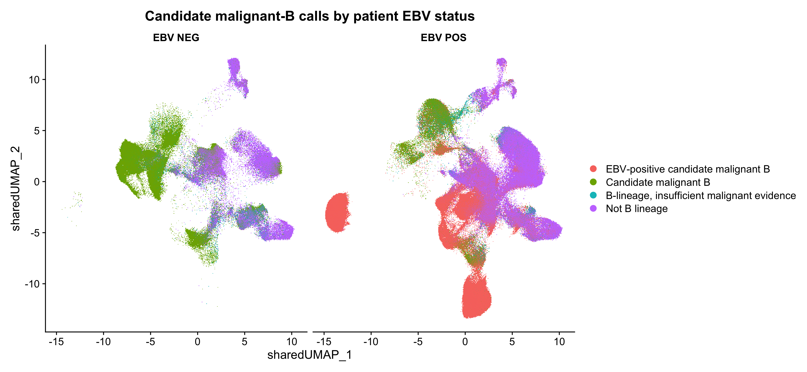
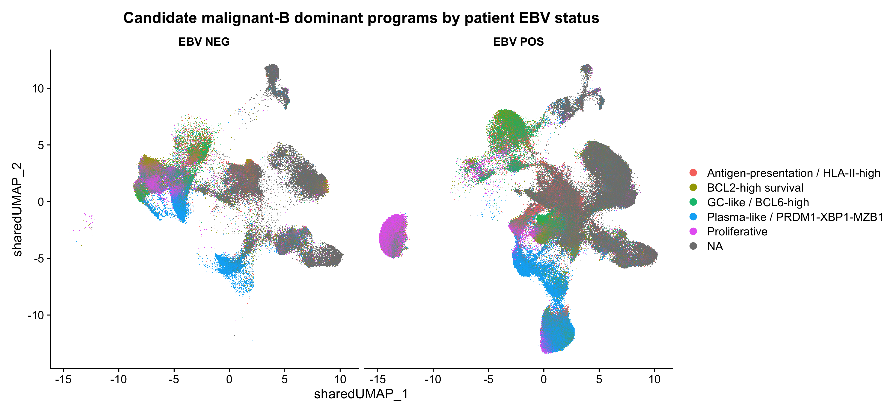
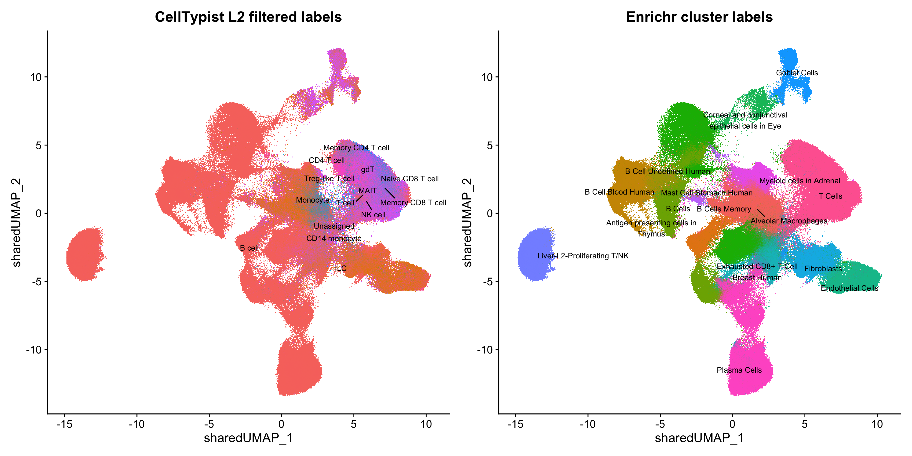
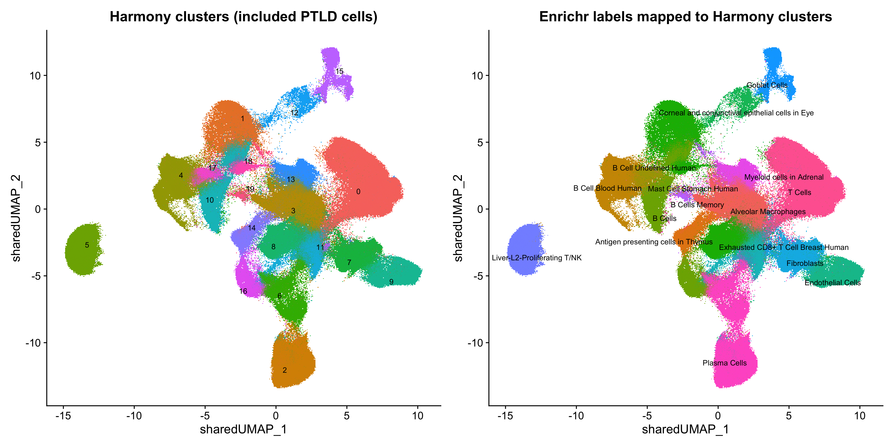
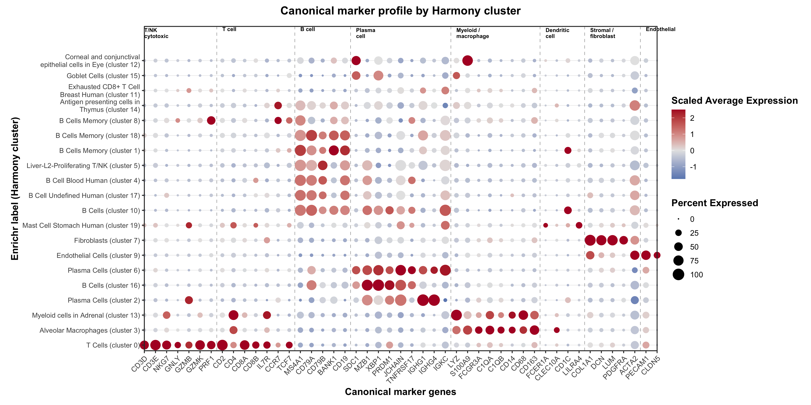
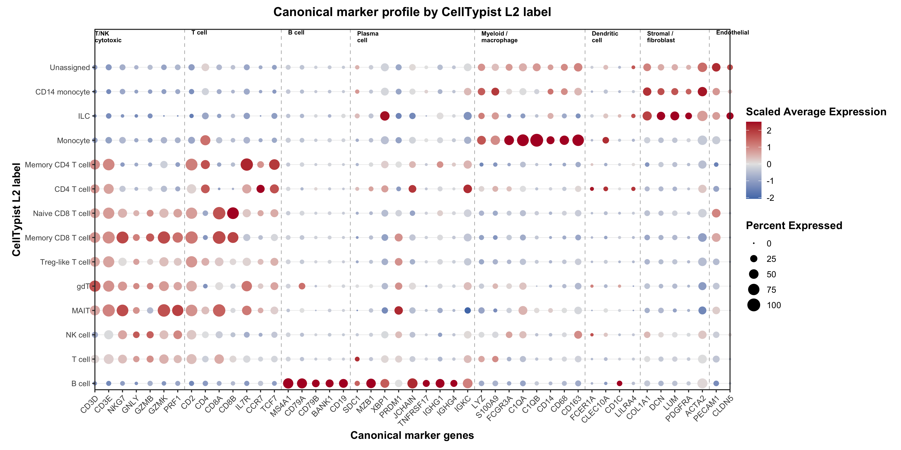
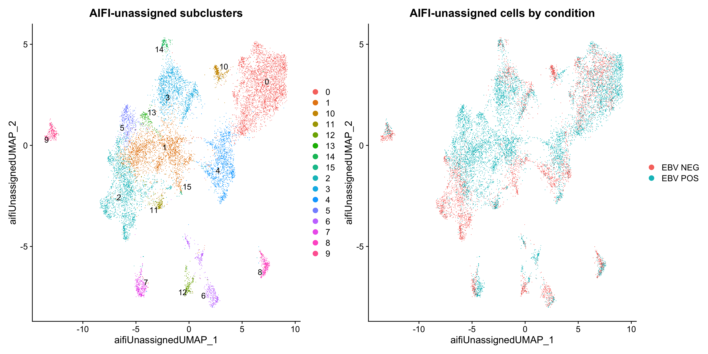

03. Xenium Cell Annotation
Andrew Portuguese
June 04, 2026
1 Analyze a specific core (EBV_POS + EBV_NEG)
This block shifts from whole-slide preprocessing to biologically motivated annotation within included cores. The primary cell-type calls come from coverage-filtered CellTypist AIFI predictions, followed by secondary state scoring and visualization so core-level composition can be compared across the two TMAs.
1.1 CellTypist AIFI hierarchical annotation (EBV_POS + EBV_NEG)
This section replaces the prior marker-threshold primary cell-type
calls with CellTypist predictions from the local AIFI immune health
atlas models. Only labels listed in
celltypist_labels_passing_coverage_thresholds.csv are
allowed downstream. Primary-supported labels are kept as-is,
secondary-supported labels are collapsed to the recommended analysis
bin, and unsupported raw predictions are retained only for QC.
Harmony-cluster majority labels are retained as QC fields but are not
used as the downstream cell label, because shared Harmony clusters can
contain mixed lineages.
celltypist_cache_tag <- paste("celltypist_aifi_coverage_hierarchy_l3", segmentation_cache_tag, "v2", sep = "_")
celltypist_out_dir <- file.path(output_root, "CellTypist_annotation")
dir.create(celltypist_out_dir, showWarnings = FALSE, recursive = TRUE)
# Compatibility objects retained for downstream chunks that still score secondary state programs.
marker_sets <- list()
score_quantiles <- numeric(0)
threshold_table_by_condition <- list()
score_df_by_condition <- list()
celltypist_dir <- file.path(analysis_dir, "CellTypist")
celltypist_model_table <- data.frame(
level = c("L1", "L2", "L3"),
model_file = file.path(
celltypist_dir,
c(
"ref_pbmc_clean_celltypist_model_flex-features_AIFI_L1_2024-04-18.pkl",
"ref_pbmc_clean_celltypist_model_flex-features_AIFI_L2_2024-04-19.pkl",
"ref_pbmc_clean_celltypist_model_flex-features_AIFI_L3_2024-04-19.pkl"
)
),
stringsAsFactors = FALSE
)
missing_models <- celltypist_model_table$model_file[!file.exists(celltypist_model_table$model_file)]
if (length(missing_models) > 0) {
stop("Missing CellTypist model files: ", paste(missing_models, collapse = ", "))
}
celltypist_label_coverage_file <- file.path(celltypist_dir, "celltypist_labels_passing_coverage_thresholds.csv")
if (!file.exists(celltypist_label_coverage_file)) {
stop("Missing CellTypist coverage allowlist: ", celltypist_label_coverage_file)
}
celltypist_label_coverage <- read.csv(celltypist_label_coverage_file, stringsAsFactors = FALSE, check.names = FALSE)
required_coverage_cols <- c("level", "celltypist_label", "recommended_analysis_bin", "support_tier")
missing_coverage_cols <- setdiff(required_coverage_cols, colnames(celltypist_label_coverage))
if (length(missing_coverage_cols) > 0) {
stop("CellTypist coverage file is missing columns: ", paste(missing_coverage_cols, collapse = ", "))
}
celltypist_label_coverage <- celltypist_label_coverage[
celltypist_label_coverage$support_tier %in% c("primary_supported", "secondary_supported"),
,
drop = FALSE
]
filter_celltypist_labels <- function(level, labels) {
labels_chr <- as.character(labels)
allow <- celltypist_label_coverage[celltypist_label_coverage$level == level, , drop = FALSE]
idx <- match(labels_chr, allow$celltypist_label)
support <- allow$support_tier[idx]
bin <- allow$recommended_analysis_bin[idx]
filtered <- ifelse(
is.na(idx),
"Unassigned",
ifelse(support == "secondary_supported", bin, labels_chr)
)
filtered[is.na(filtered) | !nzchar(filtered)] <- "Unassigned"
data.frame(
filtered_label = filtered,
support_tier = ifelse(is.na(idx), "unsupported", support),
recommended_analysis_bin = ifelse(is.na(idx), NA_character_, bin),
stringsAsFactors = FALSE
)
}
normalize_celltypist_label <- function(x) {
x <- tolower(as.character(x))
x[is.na(x)] <- ""
x
}
map_l1_raw_lineage <- function(label) {
label_l <- normalize_celltypist_label(label)
out <- rep("Other", length(label_l))
out[grepl("\\bb cell\\b|\\bb cells\\b|\\bplasma\\b", label_l, perl = TRUE)] <- "B"
out[grepl("\\bt cell\\b|\\bt cells\\b|\\btreg\\b|\\bmait\\b|\\bgdt\\b|gamma-delta", label_l, perl = TRUE)] <- "T"
out[grepl("\\bnk cell\\b|natural killer", label_l, perl = TRUE)] <- "NK"
out[grepl("\\bilc\\b", label_l, perl = TRUE)] <- "ILC"
out[grepl("\\bmono|\\bmacrophage|\\bmyeloid|\\bdc\\b|dendritic", label_l, perl = TRUE)] <- "Myeloid"
out[!nzchar(label_l)] <- "Other"
out
}
map_l2_filtered_lineage <- function(label) {
label_l <- normalize_celltypist_label(label)
out <- rep("Other", length(label_l))
out[grepl("\\bb cell\\b|\\bplasma\\b", label_l, perl = TRUE)] <- "B"
out[grepl("\\bt cell\\b|\\btreg\\b|\\bmait\\b|\\bgdt\\b|gamma-delta|\\bcd8aa\\b", label_l, perl = TRUE)] <- "T"
out[grepl("\\bnk cell\\b|natural killer", label_l, perl = TRUE)] <- "NK"
out[grepl("\\bilc\\b", label_l, perl = TRUE)] <- "ILC"
out[grepl("\\bmono|\\bmacrophage|\\bmyeloid|\\bdc\\b|dendritic", label_l, perl = TRUE)] <- "Myeloid"
out[label_l == "unassigned" | !nzchar(label_l)] <- "Other"
out
}
map_l2_label_to_l3_parent_set <- function(label) {
label_l <- normalize_celltypist_label(label)
lapply(label_l, function(x) {
if (is.na(x) || !nzchar(x) || x == "unassigned") {
return(character())
}
if (grepl("\\bb cell\\b|\\bplasma\\b", x, perl = TRUE)) {
return("B cell")
}
if (x %in% c("t cell")) {
return(c("CD4 T cell", "CD8 T cell", "Gamma-delta T cell", "MAIT-like T cell", "Treg-like T cell"))
}
if (grepl("\\bcd4 t cell\\b", x, perl = TRUE)) {
return("CD4 T cell")
}
if (grepl("\\bcd8 t cell\\b|\\bnaive cd8 t cell\\b|\\bmemory cd8 t cell\\b|\\bcd8aa\\b", x, perl = TRUE)) {
return("CD8 T cell")
}
if (grepl("\\btreg\\b", x, perl = TRUE)) {
return("Treg-like T cell")
}
if (grepl("\\bmait\\b", x, perl = TRUE)) {
return("MAIT-like T cell")
}
if (grepl("\\bgdt\\b|gamma-delta", x, perl = TRUE)) {
return("Gamma-delta T cell")
}
if (grepl("\\bnk cell\\b|natural killer", x, perl = TRUE)) {
return("NK cell")
}
if (grepl("\\bilc\\b", x, perl = TRUE)) {
return("ILC")
}
if (grepl("\\bmono|\\bmacrophage|\\bmyeloid", x, perl = TRUE)) {
return("Monocyte")
}
if (grepl("\\bdc\\b|dendritic", x, perl = TRUE)) {
return("Dendritic cell")
}
character()
})
}
is_l3_parent_compatible <- function(l2_label, l3_parent) {
expected_sets <- map_l2_label_to_l3_parent_set(l2_label)
l3_parent_chr <- as.character(l3_parent)
mapply(
function(parent_value, expected_values) {
length(expected_values) > 0 &&
!is.na(parent_value) &&
nzchar(parent_value) &&
parent_value %in% expected_values
},
l3_parent_chr,
expected_sets,
USE.NAMES = FALSE
)
}
apply_celltypist_hierarchy_gate <- function(obj) {
n_cells <- nrow(obj@meta.data)
l1_raw <- if ("celltypist_l1_label" %in% colnames(obj@meta.data)) obj$celltypist_l1_label else rep(NA_character_, n_cells)
l2_filtered <- if ("celltypist_l2_filtered" %in% colnames(obj@meta.data)) obj$celltypist_l2_filtered else rep(NA_character_, n_cells)
l1_lineage <- map_l1_raw_lineage(l1_raw)
l2_lineage <- map_l2_filtered_lineage(l2_filtered)
l2_chr <- as.character(l2_filtered)
l2_chr[is.na(l2_chr) | !nzchar(l2_chr)] <- "Unassigned"
fallback <- ifelse(
l1_lineage == "B",
"B cell",
ifelse(
l1_lineage == "T",
"T cell",
ifelse(
l1_lineage == "NK",
"NK cell",
ifelse(l1_lineage == "ILC", "ILC", "Unassigned")
)
)
)
compatible <- (l1_lineage == l2_lineage) |
(l1_lineage == "T" & l2_lineage %in% c("T", "NK")) |
(l1_lineage == "NK" & l2_lineage %in% c("NK", "T")) |
(l1_lineage == "ILC" & l2_lineage %in% c("ILC", "NK", "T")) |
(l1_lineage == "Myeloid" & l2_lineage == "Myeloid")
compatible[is.na(compatible)] <- FALSE
use_l2 <- compatible & l2_chr != "Unassigned"
hierarchy_label <- ifelse(use_l2, l2_chr, fallback)
hierarchy_label[is.na(hierarchy_label) | !nzchar(hierarchy_label)] <- "Unassigned"
obj$celltypist_l1_raw_lineage <- l1_lineage
obj$celltypist_l2_raw_filtered <- l2_chr
obj$celltypist_l2_hierarchy_compatible <- use_l2
obj$celltypist_l2_hierarchy_action <- ifelse(use_l2, "kept_l2", "fallback_to_l1_lineage")
obj$celltypist_l2_filtered <- hierarchy_label
if ("celltypist_l2_support_tier" %in% colnames(obj@meta.data)) {
support_chr <- as.character(obj$celltypist_l2_support_tier)
support_chr[!use_l2] <- "hierarchy_fallback"
obj$celltypist_l2_support_tier <- support_chr
}
if ("celltypist_l2_recommended_analysis_bin" %in% colnames(obj@meta.data)) {
bin_chr <- as.character(obj$celltypist_l2_recommended_analysis_bin)
bin_chr[!use_l2] <- hierarchy_label[!use_l2]
obj$celltypist_l2_recommended_analysis_bin <- bin_chr
}
l3_chr <- if ("celltypist_l3_filtered" %in% colnames(obj@meta.data)) {
as.character(obj$celltypist_l3_filtered)
} else {
rep(NA_character_, n_cells)
}
l3_chr[is.na(l3_chr) | !nzchar(l3_chr)] <- "Unassigned"
l3_parent <- if ("celltypist_l3_recommended_analysis_bin" %in% colnames(obj@meta.data)) {
as.character(obj$celltypist_l3_recommended_analysis_bin)
} else {
rep(NA_character_, n_cells)
}
l3_parent[is.na(l3_parent) | !nzchar(l3_parent)] <- NA_character_
use_l3 <- is_l3_parent_compatible(hierarchy_label, l3_parent) & l3_chr != "Unassigned"
use_l3[is.na(use_l3)] <- FALSE
hierarchy_highres <- ifelse(use_l3, l3_chr, hierarchy_label)
hierarchy_highres[is.na(hierarchy_highres) | !nzchar(hierarchy_highres)] <- "Unassigned"
obj$celltypist_l3_raw_filtered <- l3_chr
obj$celltypist_l3_parent_bin <- l3_parent
obj$celltypist_l3_hierarchy_compatible <- use_l3
obj$celltypist_l3_hierarchy_action <- ifelse(use_l3, "kept_l3", "fallback_to_l2_refined")
obj$celltypist_l3_filtered <- hierarchy_highres
if ("celltypist_l3_support_tier" %in% colnames(obj@meta.data)) {
support_chr <- as.character(obj$celltypist_l3_support_tier)
support_chr[!use_l3] <- "hierarchy_fallback"
obj$celltypist_l3_support_tier <- support_chr
}
if ("celltypist_l3_recommended_analysis_bin" %in% colnames(obj@meta.data)) {
bin_chr <- as.character(obj$celltypist_l3_recommended_analysis_bin)
bin_chr[!use_l3] <- hierarchy_label[!use_l3]
obj$celltypist_l3_recommended_analysis_bin <- bin_chr
}
obj
}
celltypist_python_env_value <- Sys.getenv("CELLTYPIST_PYTHON", unset = "")
celltypist_python <- if (nzchar(celltypist_python_env_value)) celltypist_python_env_value else "python3"
project_celltypist_python <- file.path(
dirname(normalizePath(analysis_dir, winslash = "/", mustWork = TRUE)),
".tools",
"celltypist_venv",
"bin",
"python"
)
if (!nzchar(celltypist_python_env_value) && file.exists(project_celltypist_python)) {
celltypist_python <- project_celltypist_python
}
if (!identical(celltypist_python, "python3") && !grepl("^/", celltypist_python)) {
celltypist_python_candidate <- file.path(getwd(), celltypist_python)
if (file.exists(celltypist_python_candidate)) {
celltypist_python <- celltypist_python_candidate
}
}
celltypist_runtime_dir <- file.path(celltypist_out_dir, "runtime")
celltypist_folder <- file.path(celltypist_runtime_dir, "celltypist_home")
celltypist_mpl_dir <- file.path(celltypist_runtime_dir, "matplotlib")
dir.create(celltypist_folder, showWarnings = FALSE, recursive = TRUE)
dir.create(celltypist_mpl_dir, showWarnings = FALSE, recursive = TRUE)
celltypist_python_env <- c(
paste0("CELLTYPIST_FOLDER=", normalizePath(celltypist_folder, winslash = "/", mustWork = FALSE)),
paste0("MPLCONFIGDIR=", normalizePath(celltypist_mpl_dir, winslash = "/", mustWork = FALSE))
)
dependency_check_code <- paste(
"import importlib, importlib.util, sys",
"mods = ['celltypist', 'scanpy', 'anndata', 'scipy', 'pandas', 'sklearn']",
"missing = [m for m in mods if importlib.util.find_spec(m) is None]",
"errors = []",
"for m in mods:",
" if m not in missing:",
" try: importlib.import_module(m)",
" except Exception as e: errors.append(f'{m}: {e}')",
"missing.extend(errors)",
"print('\\n'.join(missing))",
"sys.exit(1 if missing else 0)",
sep = "\n"
)
dependency_check <- system2(
celltypist_python,
c("-c", shQuote(dependency_check_code)),
env = celltypist_python_env,
stdout = TRUE,
stderr = TRUE
)
dependency_status <- attr(dependency_check, "status")
if (!is.null(dependency_status) && dependency_status != 0) {
missing_modules <- dependency_check[nzchar(dependency_check)]
stop(
"CellTypist Python dependencies are missing from ", celltypist_python, ": ",
paste(missing_modules, collapse = ", "),
". Install celltypist, scanpy, anndata, scipy, pandas, and scikit-learn, or set CELLTYPIST_PYTHON to an environment that has them."
)
}
celltypist_script <- file.path(celltypist_out_dir, "run_celltypist_aifi.py")
writeLines(c(
"import sys",
"from pathlib import Path",
"import pandas as pd",
"import numpy as np",
"from scipy.io import mmread",
"import anndata as ad",
"import celltypist",
"",
"input_dir = Path(sys.argv[1])",
"manifest_file = Path(sys.argv[2])",
"out_dir = Path(sys.argv[3])",
"out_dir.mkdir(parents=True, exist_ok=True)",
"X = mmread(input_dir / 'expression.mtx').tocsr()",
"genes = pd.read_csv(input_dir / 'genes.csv')",
"cells = pd.read_csv(input_dir / 'cells.csv')",
"meta = pd.read_csv(input_dir / 'metadata.csv')",
"adata = ad.AnnData(X=X)",
"adata.obs_names = cells['cell_id'].astype(str).tolist()",
"adata.var_names = genes['gene'].astype(str).tolist()",
"adata.var_names_make_unique()",
"if 'cell_id' in meta.columns:",
" meta = meta.set_index(meta['cell_id'].astype(str)).reindex(adata.obs_names)",
"else:",
" meta.index = adata.obs_names",
"adata.obs['over_clustering'] = meta['over_clustering'].fillna('missing').astype(str).to_numpy()",
"manifest = pd.read_csv(manifest_file)",
"for _, row in manifest.iterrows():",
" level = str(row['level']).lower()",
" model_file = str(row['model_file'])",
" pred = celltypist.annotate(adata, model=model_file, majority_voting=True, over_clustering='over_clustering')",
" labels = pred.predicted_labels.copy().reindex(adata.obs_names)",
" raw_col = 'predicted_labels' if 'predicted_labels' in labels.columns else labels.columns[0]",
" maj_col = 'majority_voting' if 'majority_voting' in labels.columns else raw_col",
" probs = pred.probability_matrix",
" if probs is None:",
" prob_max = pd.Series([float('nan')] * adata.n_obs, index=adata.obs_names)",
" else:",
" prob_max_raw = probs.max(axis=1)",
" if hasattr(prob_max_raw, 'reindex'):",
" prob_max = prob_max_raw.reindex(adata.obs_names)",
" else:",
" prob_max = pd.Series(np.asarray(prob_max_raw).reshape(-1), index=adata.obs_names)",
" out = pd.DataFrame({",
" 'cell_id': adata.obs_names,",
" 'celltypist_label': labels[raw_col].astype(str).to_numpy(),",
" 'celltypist_majority_label': labels[maj_col].astype(str).to_numpy(),",
" 'celltypist_probability': prob_max.to_numpy()",
" })",
" out.to_csv(out_dir / f'predictions_{level}.csv', index=False)"
), con = celltypist_script)
celltypist_cache <- make_cache_file(
"celltypist_aifi_predictions",
family = "annotations",
paste0("dims", max(preprocessing_dims)),
paste0("res", cluster_resolution),
celltypist_cache_tag
)
celltypist_annotation_res <- get_cached_rds(
celltypist_cache,
function() benchmark_stage("celltypist_aifi_annotation", {
xenium_celltypist <- xenium_by_condition
prediction_rows <- list()
manifest_file <- file.path(celltypist_out_dir, "celltypist_model_manifest.csv")
write.csv(celltypist_model_table, manifest_file, row.names = FALSE)
for (cond in names(xenium_celltypist)) {
obj <- xenium_celltypist[[cond]]
ptld_cells <- Cells(obj)[
obj$core_type == "PTLD" &
obj$core_included &
!is.na(obj$include_main_ebv_analysis) &
as.logical(obj$include_main_ebv_analysis)
]
if (length(ptld_cells) == 0) next
input_dir <- file.path(celltypist_out_dir, paste0("input_", gsub(" ", "_", cond)))
pred_dir <- file.path(celltypist_out_dir, paste0("predictions_", gsub(" ", "_", cond)))
dir.create(input_dir, showWarnings = FALSE, recursive = TRUE)
dir.create(pred_dir, showWarnings = FALSE, recursive = TRUE)
expr <- GetAssayData(obj, layer = "data")[, ptld_cells, drop = FALSE]
Matrix::writeMM(Matrix::t(expr), file.path(input_dir, "expression.mtx"))
write.csv(data.frame(gene = rownames(expr), stringsAsFactors = FALSE), file.path(input_dir, "genes.csv"), row.names = FALSE)
write.csv(data.frame(cell_id = ptld_cells, stringsAsFactors = FALSE), file.path(input_dir, "cells.csv"), row.names = FALSE)
write.csv(
data.frame(
cell_id = ptld_cells,
over_clustering = if ("harmony_cluster" %in% colnames(obj@meta.data)) as.character(obj$harmony_cluster[ptld_cells]) else "missing",
stringsAsFactors = FALSE
),
file.path(input_dir, "metadata.csv"),
row.names = FALSE
)
run_status <- system2(
celltypist_python,
c(shQuote(celltypist_script), shQuote(input_dir), shQuote(manifest_file), shQuote(pred_dir)),
env = celltypist_python_env,
stdout = TRUE,
stderr = TRUE
)
if (!is.null(attr(run_status, "status")) && attr(run_status, "status") != 0) {
stop("CellTypist failed for ", cond, ":\n", paste(run_status, collapse = "\n"))
}
for (level in celltypist_model_table$level) {
level_l <- tolower(level)
pred_file <- file.path(pred_dir, paste0("predictions_", level_l, ".csv"))
if (!file.exists(pred_file)) stop("Missing CellTypist prediction file: ", pred_file)
pred_df <- read.csv(pred_file, stringsAsFactors = FALSE, check.names = FALSE)
pred_df$condition <- cond
pred_df$level <- level
prediction_rows[[paste(cond, level, sep = "_")]] <- pred_df
filtered <- filter_celltypist_labels(level, pred_df$celltypist_label)
raw_col <- paste0("celltypist_", level_l, "_label")
majority_col <- paste0("celltypist_", level_l, "_majority_label_raw")
prob_col <- paste0("celltypist_", level_l, "_probability")
filtered_col <- paste0("celltypist_", level_l, "_filtered")
support_col <- paste0("celltypist_", level_l, "_support_tier")
bin_col <- paste0("celltypist_", level_l, "_recommended_analysis_bin")
for (col in c(raw_col, majority_col, filtered_col, support_col, bin_col)) {
if (!col %in% colnames(obj@meta.data)) obj@meta.data[[col]] <- NA_character_
}
if (!prob_col %in% colnames(obj@meta.data)) obj@meta.data[[prob_col]] <- NA_real_
cell_match <- match(pred_df$cell_id, rownames(obj@meta.data))
keep <- !is.na(cell_match)
obj@meta.data[cell_match[keep], raw_col] <- pred_df$celltypist_label[keep]
obj@meta.data[cell_match[keep], majority_col] <- pred_df$celltypist_majority_label[keep]
obj@meta.data[cell_match[keep], prob_col] <- as.numeric(pred_df$celltypist_probability[keep])
obj@meta.data[cell_match[keep], filtered_col] <- filtered$filtered_label[keep]
obj@meta.data[cell_match[keep], support_col] <- filtered$support_tier[keep]
obj@meta.data[cell_match[keep], bin_col] <- filtered$recommended_analysis_bin[keep]
}
obj <- apply_celltypist_hierarchy_gate(obj)
obj$cell_type_broad <- obj$celltypist_l1_filtered
obj$cell_type_refined <- obj$celltypist_l2_filtered
obj$cell_type_highres <- obj$celltypist_l3_filtered
xenium_celltypist[[cond]] <- obj
}
predictions <- if (length(prediction_rows) > 0) do.call(rbind, prediction_rows) else data.frame()
list(xenium_by_condition = xenium_celltypist, predictions = predictions)
}),
refresh = refresh_annotations,
metadata = list(stage = "celltypist_aifi_annotation")
)
xenium_by_condition <- celltypist_annotation_res$xenium_by_condition
xenium_pos <- xenium_by_condition[["EBV POS"]]
xenium_neg <- xenium_by_condition[["EBV NEG"]]
celltypist_predictions <- celltypist_annotation_res$predictions
if (nrow(celltypist_predictions) > 0) {
for (level in celltypist_model_table$level) {
level_df <- celltypist_predictions[celltypist_predictions$level == level, , drop = FALSE]
write.csv(
level_df,
file = file.path(celltypist_out_dir, paste0("celltypist_predictions_", tolower(level), ".csv")),
row.names = FALSE
)
}
}
celltypist_meta <- build_combined_metadata(xenium_by_condition)
celltypist_meta <- celltypist_meta[
celltypist_meta$core_type == "PTLD" &
celltypist_meta$core_included &
!is.na(celltypist_meta$include_main_ebv_analysis) &
as.logical(celltypist_meta$include_main_ebv_analysis),
,
drop = FALSE
]
summarize_celltypist_level <- function(df, level, filtered_col, raw_col, support_col) {
out <- as.data.frame(table(filtered_label = df[[filtered_col]], support_tier = df[[support_col]]), stringsAsFactors = FALSE)
out <- out[out$Freq > 0, , drop = FALSE]
names(out)[names(out) == "Freq"] <- "n_cells"
out$level <- level
out[order(out$level, -out$n_cells, out$filtered_label), c("level", "filtered_label", "support_tier", "n_cells"), drop = FALSE]
}
celltypist_annotation_summary <- do.call(
rbind,
list(
summarize_celltypist_level(celltypist_meta, "L1", "celltypist_l1_filtered", "celltypist_l1_label", "celltypist_l1_support_tier"),
summarize_celltypist_level(celltypist_meta, "L2", "celltypist_l2_filtered", "celltypist_l2_label", "celltypist_l2_support_tier"),
summarize_celltypist_level(celltypist_meta, "L3", "celltypist_l3_filtered", "celltypist_l3_label", "celltypist_l3_support_tier")
)
)
rownames(celltypist_annotation_summary) <- NULL
write.csv(celltypist_annotation_summary, file = file.path(celltypist_out_dir, "celltypist_filtered_label_summary.csv"), row.names = FALSE)
unsupported_summary <- do.call(
rbind,
lapply(c("l1", "l2", "l3"), function(level_l) {
support_col <- paste0("celltypist_", level_l, "_support_tier")
raw_col <- paste0("celltypist_", level_l, "_label")
level_df <- celltypist_meta[celltypist_meta[[support_col]] == "unsupported", , drop = FALSE]
if (nrow(level_df) == 0) return(NULL)
out <- as.data.frame(table(raw_label = level_df[[raw_col]]), stringsAsFactors = FALSE)
names(out)[names(out) == "Freq"] <- "n_cells"
out$level <- toupper(level_l)
out[order(-out$n_cells, out$raw_label), c("level", "raw_label", "n_cells"), drop = FALSE]
})
)
if (is.null(unsupported_summary)) unsupported_summary <- data.frame(level = character(), raw_label = character(), n_cells = integer())
write.csv(unsupported_summary, file = file.path(celltypist_out_dir, "celltypist_unsupported_prediction_summary.csv"), row.names = FALSE)
label_counts_by_condition <- as.data.frame(table(
condition = celltypist_meta$condition,
cell_type_broad = celltypist_meta$cell_type_broad,
cell_type_refined = celltypist_meta$cell_type_refined
), stringsAsFactors = FALSE)
label_counts_by_condition <- label_counts_by_condition[label_counts_by_condition$Freq > 0, , drop = FALSE]
names(label_counts_by_condition)[names(label_counts_by_condition) == "Freq"] <- "n_cells"
write.csv(label_counts_by_condition, file = file.path(celltypist_out_dir, "celltypist_label_counts_by_condition.csv"), row.names = FALSE)
label_counts_by_patient <- as.data.frame(table(
condition = celltypist_meta$condition,
patient_id = celltypist_meta$patient_id,
cell_type_refined = celltypist_meta$cell_type_refined
), stringsAsFactors = FALSE)
label_counts_by_patient <- label_counts_by_patient[label_counts_by_patient$Freq > 0, , drop = FALSE]
names(label_counts_by_patient)[names(label_counts_by_patient) == "Freq"] <- "n_cells"
write.csv(label_counts_by_patient, file = file.path(celltypist_out_dir, "celltypist_label_counts_by_patient.csv"), row.names = FALSE)
knitr::kable(
celltypist_annotation_summary,
row.names = FALSE,
caption = "Coverage-filtered CellTypist AIFI labels used for downstream annotation"
)| level | filtered_label | support_tier | n_cells |
|---|---|---|---|
| L1 | B cell | secondary_supported | 274950 |
| L1 | T cell | primary_supported | 102968 |
| L1 | Unassigned | unsupported | 78286 |
| L1 | NK cell | primary_supported | 175 |
| L1 | ILC | secondary_supported | 37 |
| L2 | B cell | hierarchy_fallback | 259947 |
| L2 | T cell | hierarchy_fallback | 79957 |
| L2 | CD14 monocyte | primary_supported | 56759 |
| L2 | B cell | secondary_supported | 15003 |
| L2 | Unassigned | hierarchy_fallback | 13363 |
| L2 | Treg-like T cell | secondary_supported | 11380 |
| L2 | Monocyte | secondary_supported | 8164 |
| L2 | Memory CD8 T cell | primary_supported | 4201 |
| L2 | Naive CD8 T cell | primary_supported | 4149 |
| L2 | Memory CD4 T cell | primary_supported | 1352 |
| L2 | NK cell | secondary_supported | 1072 |
| L2 | CD4 T cell | secondary_supported | 690 |
| L2 | NK cell | hierarchy_fallback | 146 |
| L2 | gdT | primary_supported | 138 |
| L2 | MAIT | primary_supported | 62 |
| L2 | ILC | hierarchy_fallback | 33 |
| L3 | B cell | hierarchy_fallback | 231171 |
| L3 | B cell | secondary_supported | 43779 |
| L3 | T cell | hierarchy_fallback | 43185 |
| L3 | CD14 monocyte | hierarchy_fallback | 36305 |
| L3 | Monocyte | secondary_supported | 20454 |
| L3 | Treg-like T cell | secondary_supported | 13942 |
| L3 | Unassigned | hierarchy_fallback | 13363 |
| L3 | GZMK+ CD27+ EM CD8 T cell | primary_supported | 9144 |
| L3 | Monocyte | hierarchy_fallback | 8164 |
| L3 | CD4 T cell | secondary_supported | 7643 |
| L3 | Naive CD4 Treg | primary_supported | 6203 |
| L3 | Core naive CD8 T cell | primary_supported | 5111 |
| L3 | Treg-like T cell | hierarchy_fallback | 2104 |
| L3 | CM CD4 T cell | primary_supported | 1743 |
| L3 | Memory CD4 Treg | primary_supported | 1698 |
| L3 | SOX4+ naive CD8 T cell | primary_supported | 1499 |
| L3 | Naive CD8 T cell | hierarchy_fallback | 1489 |
| L3 | CD8 T cell | secondary_supported | 1310 |
| L3 | NK cell | hierarchy_fallback | 1063 |
| L3 | KLRB1+ memory CD4 Treg | primary_supported | 1035 |
| L3 | Memory CD8 T cell | hierarchy_fallback | 961 |
| L3 | ISG+ memory CD4 T cell | primary_supported | 791 |
| L3 | CM CD8 T cell | primary_supported | 626 |
| L3 | KLRF1- GZMB+ CD27- EM CD8 T cell | primary_supported | 606 |
| L3 | Memory CD4 T cell | hierarchy_fallback | 507 |
| L3 | MAIT-like T cell | secondary_supported | 466 |
| L3 | KLRF1+ GZMB+ CD27- EM CD8 T cell | primary_supported | 376 |
| L3 | GZMB- CD27+ EM CD4 T cell | primary_supported | 352 |
| L3 | CD8 MAIT | primary_supported | 296 |
| L3 | CD4 T cell | hierarchy_fallback | 281 |
| L3 | KLRF1+ effector Vd1 gdT | primary_supported | 195 |
| L3 | gdT | hierarchy_fallback | 133 |
| L3 | Gamma-delta T cell | secondary_supported | 131 |
| L3 | NK cell | secondary_supported | 65 |
| L3 | GZMK- CD56dim NK cell | primary_supported | 51 |
| L3 | MAIT | hierarchy_fallback | 45 |
| L3 | GZMB- CD27- EM CD4 T cell | primary_supported | 36 |
| L3 | ILC | secondary_supported | 21 |
| L3 | Adaptive NK cell | primary_supported | 20 |
| L3 | GZMK+ CD56dim NK cell | primary_supported | 14 |
| L3 | ILC | hierarchy_fallback | 12 |
| L3 | GZMB+ Vd2 gdT | primary_supported | 9 |
| L3 | KLRF1- GZMB+ CD27- memory CD4 T cell | primary_supported | 7 |
| L3 | CD56bright NK cell | primary_supported | 5 |
| L3 | CD8aa | primary_supported | 3 |
| L3 | GZMK+ Vd2 gdT | primary_supported | 2 |
1.2 Visualize CellTypist cell types within PTLD cores (EBV_POS + EBV_NEG)
This section maps the coverage-filtered CellTypist L2 labels back
onto each PTLD core. The purpose is to summarize spatial cell-type
composition using the same cell_type_refined labels that
feed the downstream composition analysis.
make_cell_types <- function(core_cells, centroids_sub, xenium_obj) {
labels <- as.character(xenium_obj$cell_type_refined[centroids_sub$cell])
labels[is.na(labels) | !nzchar(labels)] <- "Unassigned"
label_levels <- sort(unique(labels))
if ("Unassigned" %in% label_levels) {
label_levels <- c(setdiff(label_levels, "Unassigned"), "Unassigned")
}
centroids_sub$cell_type <- factor(labels, levels = label_levels)
centroids_sub
}
plot_core_celltypes <- function(centroids_sub, core_id, condition_label) {
label_levels <- levels(centroids_sub$cell_type)
color_values <- setNames(
grDevices::hcl.colors(length(label_levels), palette = "Dark 3"),
label_levels
)
if ("Unassigned" %in% names(color_values)) color_values[["Unassigned"]] <- "grey70"
ggplot(centroids_sub, aes(x = x, y = y, color = cell_type)) +
geom_point(size = 0.1, alpha = 0.7) +
coord_equal() +
theme_void() +
scale_color_manual(values = color_values, drop = FALSE) +
labs(title = paste(condition_label, "- Core", core_id), color = "Cell Type") +
guides(color = guide_legend(override.aes = list(size = 4, alpha = 1))) +
theme(legend.key.size = unit(6, "mm"), legend.text = element_text(size = 10))
}
immune_types <- sort(unique(unlist(lapply(xenium_by_condition, function(obj) {
as.character(obj$cell_type_refined[
obj$core_type == "PTLD" &
obj$core_included &
!is.na(obj$cell_type_refined) &
nzchar(as.character(obj$cell_type_refined))
])
}))))
if (length(immune_types) == 0) immune_types <- "Unassigned"
immune_summary_all <- list()
out_dir_base <- file.path(output_root, "JPEG_core_celltypes", celltypist_cache_tag)
dir.create(out_dir_base, showWarnings = FALSE, recursive = TRUE)
celltype_plot_version <- celltypist_cache_tag
celltype_plot_version_file <- file.path(out_dir_base, paste0(".celltype_plot_version_", celltype_plot_version))
celltype_plot_regenerate <- refresh_reports || !file.exists(celltype_plot_version_file)
for (cond in names(xenium_by_condition)) {
obj <- xenium_by_condition[[cond]]
centroids_obj <- centroids_by_condition[[cond]]
cond_slug <- gsub(" ", "_", cond)
out_dir <- file.path(out_dir_base, cond_slug)
dir.create(out_dir, showWarnings = FALSE, recursive = TRUE)
ptld_cores_cond <- get_included_core_ids(obj, cond, core_type = "PTLD")
for (core_id in ptld_cores_cond) {
core_cells <- Cells(obj)[obj$core_id == core_id]
centroids_core <- centroids_obj[centroids_obj$cell %in% core_cells, ]
centroids_core <- make_cell_types(core_cells, centroids_core, obj)
out_file <- file.path(out_dir, paste0(cond_slug, "_core_", core_id, "_celltypes.jpg"))
if (should_generate_file(out_file, refresh = celltype_plot_regenerate)) {
p <- plot_core_celltypes(centroids_core, core_id, cond)
ggsave(
filename = out_file,
plot = p,
width = 6, height = 6, units = "in",
dpi = 300
)
}
immune_counts <- table(factor(centroids_core$cell_type, levels = immune_types))
immune_props <- immune_counts / sum(immune_counts)
immune_summary_all[[paste(cond, core_id, sep = "_")]] <- data.frame(
condition = cond,
core_id = core_id,
cell_type = immune_types,
count = as.integer(immune_counts),
proportion = as.numeric(immune_props)
)
}
}
if (isTRUE(celltype_plot_regenerate)) {
file.create(celltype_plot_version_file)
}
immune_summary <- do.call(rbind, immune_summary_all)
write.csv(immune_summary, file = file.path(output_root, "ptld_core_immune_summary_by_condition.csv"), row.names = FALSE)
immune_summary_display <- aggregate(
cbind(count = count, proportion = proportion) ~ condition + cell_type,
data = immune_summary,
FUN = function(x) if (is.numeric(x)) mean(x, na.rm = TRUE) else x[1]
)
immune_summary_display$count <- round(immune_summary_display$count, 1)
immune_summary_display$proportion <- round(immune_summary_display$proportion, 3)
knitr::kable(
immune_summary_display,
row.names = FALSE,
caption = "Mean PTLD core immune abundance by condition"
)| condition | cell_type | count | proportion |
|---|---|---|---|
| EBV NEG | B cell | 6133.1 | 0.660 |
| EBV POS | B cell | 6856.4 | 0.604 |
| EBV NEG | CD14 monocyte | 1208.1 | 0.139 |
| EBV POS | CD14 monocyte | 1458.9 | 0.129 |
| EBV NEG | CD4 T cell | 20.3 | 0.001 |
| EBV POS | CD4 T cell | 13.5 | 0.001 |
| EBV NEG | gdT | 2.7 | 0.000 |
| EBV POS | gdT | 3.7 | 0.000 |
| EBV NEG | ILC | 0.6 | 0.000 |
| EBV POS | ILC | 0.9 | 0.000 |
| EBV NEG | MAIT | 1.3 | 0.000 |
| EBV POS | MAIT | 1.6 | 0.000 |
| EBV NEG | Memory CD4 T cell | 31.9 | 0.002 |
| EBV POS | Memory CD4 T cell | 32.4 | 0.002 |
| EBV NEG | Memory CD8 T cell | 85.7 | 0.006 |
| EBV POS | Memory CD8 T cell | 110.8 | 0.007 |
| EBV NEG | Monocyte | 106.6 | 0.011 |
| EBV POS | Monocyte | 260.2 | 0.021 |
| EBV NEG | Naive CD8 T cell | 77.8 | 0.005 |
| EBV POS | Naive CD8 T cell | 114.5 | 0.008 |
| EBV NEG | NK cell | 15.7 | 0.002 |
| EBV POS | NK cell | 39.0 | 0.003 |
| EBV NEG | T cell | 1346.9 | 0.135 |
| EBV POS | T cell | 2321.4 | 0.172 |
| EBV NEG | Treg-like T cell | 137.6 | 0.010 |
| EBV POS | Treg-like T cell | 371.0 | 0.024 |
| EBV NEG | Unassigned | 274.9 | 0.029 |
| EBV POS | Unassigned | 350.6 | 0.029 |
# Keep EBV POS aliases for downstream EBV POS-specific chunks.
ptld_cores <- get_included_core_ids(xenium_pos, "EBV POS", core_type = "PTLD")
core_id <- ptld_cores[1]1.3 Cell outlines on morphology for each core (EBV_POS + EBV_NEG)
These plots overlay Xenium cell boundaries and centroids directly on the morphology image for each included core. The methodological purpose is quality control: they verify that segmentation-derived outlines are spatially aligned with the tissue context on a per-core basis.
outlines_out_dir <- file.path(output_root, "core_outlines_morphology", segmentation_cache_tag)
dir.create(outlines_out_dir, showWarnings = FALSE, recursive = TRUE)
outline_index <- list()
for (cond in names(xenium_by_condition)) {
obj <- xenium_by_condition[[cond]]
centroids_obj <- centroids_by_condition[[cond]]
sample_key <- gsub(" ", "_", cond)
cond_dir <- file.path(outlines_out_dir, sample_key)
dir.create(cond_dir, showWarnings = FALSE, recursive = TRUE)
core_ids <- get_included_core_ids(obj, cond)
for (core_id in core_ids) {
out_file <- file.path(cond_dir, paste0(sample_key, "_core_", core_id, "_outlines_morphology.png"))
if (should_generate_file(out_file, refresh = refresh_reports)) {
draw_core_outlines_on_morphology(
sample_key = sample_key,
core_id = core_id,
object = obj,
centroids_obj = centroids_obj,
out_file = out_file
)
}
outline_index[[paste(sample_key, core_id, sep = "_")]] <- data.frame(
condition = cond,
core_id = core_id,
file = out_file,
stringsAsFactors = FALSE
)
}
}
outline_index <- do.call(rbind, outline_index)
write.csv(
outline_index,
file = file.path(outlines_out_dir, "core_outline_morphology_index.csv"),
row.names = FALSE
)
outline_summary <- as.data.frame(table(condition = outline_index$condition), stringsAsFactors = FALSE)
names(outline_summary) <- c("condition", "n_outline_images")
knitr::kable(
outline_summary,
row.names = FALSE,
caption = "Morphology outline images generated or available by condition"
)| condition | n_outline_images |
|---|---|
| EBV NEG | 18 |
| EBV POS | 24 |
1.4 Core “passport” montage (EBV_POS + EBV_NEG, cell-type only)
This optional montage assembles the per-core cell-type maps into a compact figure for each TMA. The purpose is presentation and rapid visual comparison across many cores without having to open each image separately.
# Build a presentation-friendly montage from cell-type plots (no morphology)
core_out_dir <- file.path(output_root, "JPEG_core_celltypes", celltypist_cache_tag)
if (requireNamespace("magick", quietly = TRUE)) {
for (cond_slug in c("EBV_POS", "EBV_NEG")) {
cond_dir <- file.path(core_out_dir, cond_slug)
files <- list.files(cond_dir, pattern = "_core_R[0-9]+_C[0-9]+_celltypes\\.jpg$", full.names = TRUE)
if (length(files) == 0) {
message("No core cell-type images found in ", cond_dir)
next
}
montage_file <- file.path(cond_dir, paste0("core_passport_montage_", cond_slug, ".jpg"))
if (!should_generate_file(montage_file, refresh = refresh_reports || isTRUE(celltype_plot_regenerate))) {
next
}
imgs <- magick::image_read(files)
info <- magick::image_info(imgs[1])
legend_frac <- 0.30
legend_w <- round(info$width * legend_frac)
main_w <- info$width - legend_w
trim_px <- 20
tile_w <- max(1, main_w - trim_px)
legend_img <- magick::image_crop(imgs[1], geometry = paste0(legend_w, "x", info$height, "+", main_w, "+0"))
labels <- sub(paste0("^", cond_slug, "_core_(.*)_celltypes\\.jpg$"), "\\1", basename(files))
for (i in seq_along(imgs)) {
imgs[i] <- magick::image_crop(imgs[i], geometry = paste0(tile_w, "x", info$height, "+0+0"))
imgs[i] <- magick::image_resize(imgs[i], "1200x1200")
imgs[i] <- magick::image_extent(imgs[i], "1200x1200", gravity = "center")
imgs[i] <- magick::image_annotate(
imgs[i],
text = labels[i],
size = 40,
color = "white",
gravity = "southwest",
location = "+20+20"
)
}
montage <- magick::image_montage(imgs, tile = "5x2", geometry = "1200x1200+20+20")
m_info <- magick::image_info(montage)
legend_img <- magick::image_scale(legend_img, paste0("x", m_info$height))
montage_with_legend <- magick::image_append(c(montage, legend_img), stack = FALSE)
magick::image_write(montage_with_legend, montage_file, format = "jpeg", density = "300x300")
}
} else {
message("Install the 'magick' package to build the montage.")
}1.5 Visualize Seurat clusters and PCA signals within each core (EBV_POS + EBV_NEG)
This section reprojects the integrated clustering and major PCA axes back into each included PTLD core. It is meant to reveal within-core structure that may be obscured in the combined UMAP, such as local gradients or region-specific cluster enrichment.
out_dir_clusters <- file.path(output_root, "JPEG_core_clusters")
out_dir_pca <- file.path(output_root, "JPEG_core_pca")
dir.create(out_dir_clusters, showWarnings = FALSE, recursive = TRUE)
dir.create(out_dir_pca, showWarnings = FALSE, recursive = TRUE)
for (cond in names(xenium_by_condition)) {
obj <- xenium_by_condition[[cond]]
centroids_obj <- centroids_by_condition[[cond]]
cond_slug <- gsub(" ", "_", cond)
if (!"harmony_cluster" %in% colnames(obj@meta.data)) {
stop("Harmony clusters are missing for ", cond, ". Run the Harmony batch-correction chunk first.")
}
if (!"pca" %in% Reductions(obj)) {
feats <- VariableFeatures(obj)
if (length(feats) == 0) feats <- rownames(obj)
obj <- RunPCA(obj, features = feats)
}
pca_embed <- Embeddings(obj, "pca")
ptld_cores_cond <- get_included_core_ids(obj, cond, core_type = "PTLD")
for (core_id in ptld_cores_cond) {
core_cells <- Cells(obj)[obj$core_id == core_id]
centroids_core <- centroids_obj[centroids_obj$cell %in% core_cells, ]
centroids_core$cluster <- factor(obj$harmony_cluster[centroids_core$cell])
centroids_core$PC1 <- pca_embed[centroids_core$cell, 1]
centroids_core$PC2 <- pca_embed[centroids_core$cell, 2]
cluster_file <- file.path(out_dir_clusters, paste0(cond_slug, "_core_", core_id, "_clusters.jpg"))
pc1_file <- file.path(out_dir_pca, paste0(cond_slug, "_core_", core_id, "_PC1.jpg"))
pc2_file <- file.path(out_dir_pca, paste0(cond_slug, "_core_", core_id, "_PC2.jpg"))
if (should_generate_file(cluster_file, refresh = refresh_reports)) {
p_cluster <- ggplot(centroids_core, aes(x = x, y = y, color = cluster)) +
geom_point(size = 0.1, alpha = 0.7) +
coord_equal() +
theme_void() +
labs(title = paste(cond, "- Core", core_id, "- Harmony clusters"), color = "Cluster") +
guides(color = guide_legend(override.aes = list(size = 4, alpha = 1)))
show_and_save_plot(
p_cluster,
filename = cluster_file,
width = 6, height = 6, units = "in",
dpi = 300
)
}
if (should_generate_file(pc1_file, refresh = refresh_reports)) {
p_pc1 <- ggplot(centroids_core, aes(x = x, y = y, color = PC1)) +
geom_point(size = 0.1, alpha = 0.7) +
coord_equal() +
theme_void() +
scale_color_viridis_c(option = "C") +
labs(title = paste(cond, "- Core", core_id, "- PC1"), color = "PC1")
show_and_save_plot(
p_pc1,
filename = pc1_file,
width = 6, height = 6, units = "in",
dpi = 300
)
}
if (should_generate_file(pc2_file, refresh = refresh_reports)) {
p_pc2 <- ggplot(centroids_core, aes(x = x, y = y, color = PC2)) +
geom_point(size = 0.1, alpha = 0.7) +
coord_equal() +
theme_void() +
scale_color_viridis_c(option = "C") +
labs(title = paste(cond, "- Core", core_id, "- PC2"), color = "PC2")
show_and_save_plot(
p_pc2,
filename = pc2_file,
width = 6, height = 6, units = "in",
dpi = 300
)
}
}
xenium_by_condition[[cond]] <- obj
}
xenium_pos <- xenium_by_condition[["EBV POS"]]
xenium_neg <- xenium_by_condition[["EBV NEG"]]1.6 Plot Artifact Viewer
Detailed plot artifact thumbnails and in-page image viewing have been moved to the standalone local viewer:
- Source:
plot artifact viewer - Rendered HTML:
Analysis/Xenium_artifact_viewers/Xenium_plot_artifact_viewer.html
This main website section keeps only the analysis output summaries so the rendered page stays smaller.
1.7 CellTypist label finalization
The CellTypist coverage-filtered labels are already the primary
downstream annotations. This chunk keeps the secondary lineage marker
definitions available for later state scoring and cluster QC, but it no
longer reassigns an Other compartment by marker
thresholds.
lineage_markers <- list(
B = c("MS4A1", "CD79A", "CD79B"),
`Plasma cell` = c("SDC1", "MZB1", "XBP1", "JCHAIN", "PRDM1", "TNFRSF17", "CD38"),
T = c("CD3D", "CD3E", "TRBC1"),
NK = c("NKG7", "GNLY", "PRF1"),
Myeloid = c("LYZ", "LST1", "CTSS"),
DC = c("FCER1A", "CLEC10A", "ITGAX"),
Endothelial = c("PECAM1", "VWF", "KDR"),
Fibroblast = c("COL1A1", "COL1A2", "DCN", "LUM")
)
other_summary_table <- data.frame(
condition = character(),
core_id = character(),
inferred_type = character(),
count = integer(),
stringsAsFactors = FALSE
)
other_summary_display <- data.frame(
status = "Skipped",
reason = "Primary labels come from coverage-filtered CellTypist AIFI predictions.",
stringsAsFactors = FALSE
)
knitr::kable(
other_summary_display,
row.names = FALSE,
caption = "Marker-based Other-cell reassignment"
)| status | reason |
|---|---|
| Skipped | Primary labels come from coverage-filtered CellTypist AIFI predictions. |
1.8 Refine T-cell and malignant B states across included PTLD cores (EBV_POS + EBV_NEG)
This section adds two biologically focused annotation layers on top of the first-pass refined labels. T-lineage cells are reassigned into functional T/NK states using panel-supported marker programs, and B-lineage cells are scored for candidate malignant-B evidence. The rendered tables below are compact report summaries; full patient-, core-, program-, and cell-level review outputs are still written as CSV files for downstream analysis.
state_out_dir <- file.path(output_root, "PTLD_state_annotations")
dir.create(state_out_dir, showWarnings = FALSE, recursive = TRUE)
tcell_state_levels <- c(
"CD8 cytotoxic",
"CD8 exhausted",
"Treg",
"Tfh / CXCR5+ helper",
"CD4 helper",
"NK",
"Unassigned T/NK"
)
malignant_b_state_levels <- c(
"Proliferative",
"GC-like / BCL6-high",
"BCL2-high survival",
"Plasma-like / PRDM1-XBP1-MZB1",
"Antigen-presentation / HLA-II-high",
"Other malignant B"
)
tcell_gene_sets <- list(
tcell_cytotoxic = c("CD8A", "CD8B", "GZMB", "PRF1", "IFNG"),
tcell_exhausted = c("PDCD1", "CTLA4", "LAG3", "TIGIT", "HAVCR2", "TOX", "CXCL13"),
tcell_treg = c("FOXP3", "IL2RA", "CTLA4", "ICOS"),
tcell_tfh = c("CXCR5", "ICOS", "CXCL13", "PDCD1", "CD4"),
tcell_helper = c("CD3D", "CD3E", "IL7R", "LTB", "CD4"),
tcell_nk = c("NKG7", "GNLY", "PRF1", "GZMB")
)
malignant_b_gene_sets <- list(
malignant_b_proliferative = c("MKI67", "MYC", "TOP2A", "PCNA"),
malignant_b_gc_like = c("BCL6", "CD74", "HLA-DRA", "MS4A1"),
malignant_b_bcl2_high = c("BCL2", "MCL1", "TCL1A"),
malignant_b_plasma_like = c("PRDM1", "XBP1", "MZB1", "SDC1"),
malignant_b_antigen_presentation = c("HLA-DRA", "HLA-DRB1", "CD74", "CIITA"),
malignant_b_other = c("MS4A1", "CD79A", "CD79B")
)
candidate_malignant_b_program_cols <- c(
malignant_b_proliferative = "Proliferative",
malignant_b_gc_like = "GC-like / BCL6-high",
malignant_b_bcl2_high = "BCL2-high survival",
malignant_b_plasma_like = "Plasma-like / PRDM1-XBP1-MZB1",
malignant_b_antigen_presentation = "Antigen-presentation / HLA-II-high"
)
candidate_malignant_b_call_levels <- c(
"EBV-positive candidate malignant B",
"Candidate malignant B",
"B-lineage, insufficient malignant evidence",
"Not B lineage",
"Not evaluated"
)
candidate_malignant_b_confidence_levels <- c("High", "Moderate", "Low", "Not evaluated")
ebv_feature_patterns <- c("EBER", "LMP", "EBNA", "BZLF", "KP195684", "NC-007605", "M87777", "U08278")
is_tnk_cell <- function(obj) {
refined <- as.character(obj$cell_type_refined)
broad <- if ("cell_type_broad" %in% colnames(obj@meta.data)) as.character(obj$cell_type_broad) else rep(NA_character_, length(refined))
grepl("T cell|Treg|Gamma-delta|MAIT|NK cell|ILC|^gdT$|^CD8aa$", refined, ignore.case = TRUE) |
broad %in% c("T cell", "NK cell", "ILC")
}
is_b_lineage_cell <- function(obj) {
refined <- as.character(obj$cell_type_refined)
broad <- if ("cell_type_broad" %in% colnames(obj@meta.data)) as.character(obj$cell_type_broad) else rep(NA_character_, length(refined))
grepl("\\bB cell\\b|Plasma", refined, ignore.case = TRUE) |
broad %in% c("B cell")
}
state_definition_table <- rbind(
data.frame(
compartment = "T/NK",
state = tcell_state_levels,
marker_support = c(
"CD8A;CD8B;GZMB;PRF1;IFNG",
"PDCD1;CTLA4;LAG3;TIGIT;HAVCR2;TOX;CXCL13",
"FOXP3;IL2RA;CTLA4;ICOS",
"CXCR5;ICOS;CXCL13;PDCD1;CD4",
"CD3D;CD3E;IL7R;LTB;CD4",
"NKG7;GNLY;PRF1;GZMB",
"Low-confidence residual T/NK profile"
),
stringsAsFactors = FALSE
),
data.frame(
compartment = "Malignant B",
state = malignant_b_state_levels,
marker_support = c(
"MKI67;MYC;TOP2A;PCNA",
"BCL6;CD74;HLA-DRA;MS4A1",
"BCL2;MCL1;TCL1A",
"PRDM1;XBP1;MZB1;SDC1",
"HLA-DRA;HLA-DRB1;CD74;CIITA",
"Residual malignant-B profile"
),
stringsAsFactors = FALSE
)
)
write.csv(
state_definition_table,
file = file.path(state_out_dir, "state_definition_table.csv"),
row.names = FALSE
)
state_annotation_cache <- make_cache_file(
"xenium_state_annotated",
family = "annotations",
paste0("dims", max(preprocessing_dims)),
paste0("res", cluster_resolution),
celltypist_cache_tag,
"candidate_malignant_b_patient_status_v2_state_tables"
)
state_annotation_res <- get_cached_rds(
state_annotation_cache,
function() benchmark_stage("state_annotation", {
xenium_state <- xenium_by_condition
state_assignment_summary <- list()
candidate_malignant_b_score_rows <- list()
for (cond in names(xenium_state)) {
obj <- xenium_state[[cond]]
expr <- GetAssayData(obj, layer = "data")
score_df <- make_named_score_matrix(
expr,
c(tcell_gene_sets, malignant_b_gene_sets)
)
rownames(score_df) <- colnames(expr)
obj$tcell_state <- NA_character_
obj$malignant_b_state <- NA_character_
obj$patient_ebv_status <- if ("analysis_ebv_group" %in% colnames(obj@meta.data)) {
as.character(obj$analysis_ebv_group)
} else {
NA_character_
}
obj$b_lineage_candidate <- FALSE
obj$candidate_malignant_b_call <- "Not evaluated"
obj$candidate_malignant_b_confidence <- "Not evaluated"
obj$candidate_malignant_b_program <- NA_character_
obj$candidate_malignant_b_rule <- NA_character_
obj$candidate_malignant_b_review_flag <- NA_character_
t_cells <- Cells(obj)[obj$core_type == "PTLD" & obj$core_included & is_tnk_cell(obj)]
if (length(t_cells) > 0) {
t_score_cols <- names(tcell_gene_sets)
t_score_mat <- as.matrix(score_df[t_cells, t_score_cols, drop = FALSE])
t_state_map <- c(
tcell_cytotoxic = "CD8 cytotoxic",
tcell_exhausted = "CD8 exhausted",
tcell_treg = "Treg",
tcell_tfh = "Tfh / CXCR5+ helper",
tcell_helper = "CD4 helper",
tcell_nk = "NK"
)
t_max_idx <- max.col(t_score_mat, ties.method = "first")
t_assign <- unname(t_state_map[colnames(t_score_mat)[t_max_idx]])
names(t_assign) <- t_cells
low_confidence <- apply(t_score_mat, 1, max) < 0.10
t_assign[low_confidence] <- "Unassigned T/NK"
t_assign[grepl("NK cell", obj$cell_type_refined[t_cells], ignore.case = TRUE)] <- "NK"
t_assign[grepl("Treg", obj$cell_type_refined[t_cells], ignore.case = TRUE)] <- "Treg"
cxcr5_cells <- t_cells[grepl("CD4 T cell|Treg-like T cell", obj$cell_type_refined[t_cells])]
if (length(cxcr5_cells) > 0) {
tfh_bias <- score_df[cxcr5_cells, "tcell_tfh"] >= score_df[cxcr5_cells, "tcell_helper"]
t_assign[cxcr5_cells[tfh_bias]] <- "Tfh / CXCR5+ helper"
}
cd8_cells <- t_cells[grepl("CD8 T cell|Gamma-delta|MAIT|^gdT$|^CD8aa$", obj$cell_type_refined[t_cells], ignore.case = TRUE)]
if (length(cd8_cells) > 0) {
exhausted_bias <- score_df[cd8_cells, "tcell_exhausted"] >= score_df[cd8_cells, "tcell_cytotoxic"]
t_assign[cd8_cells[exhausted_bias]] <- "CD8 exhausted"
t_assign[cd8_cells[!exhausted_bias]] <- "CD8 cytotoxic"
}
helper_cells <- t_cells[grepl("CD4 T cell", obj$cell_type_refined[t_cells], ignore.case = TRUE)]
if (length(helper_cells) > 0) {
t_assign[helper_cells] <- "CD4 helper"
}
obj$tcell_state[t_cells] <- as.character(t_assign[t_cells])
}
malignant_cells <- Cells(obj)[obj$core_type == "PTLD" & obj$core_included & is_b_lineage_cell(obj)]
if (length(malignant_cells) > 0) {
malignant_score_cols <- names(malignant_b_gene_sets)
malignant_score_mat <- as.matrix(score_df[malignant_cells, malignant_score_cols, drop = FALSE])
malignant_state_map <- c(
malignant_b_proliferative = "Proliferative",
malignant_b_gc_like = "GC-like / BCL6-high",
malignant_b_bcl2_high = "BCL2-high survival",
malignant_b_plasma_like = "Plasma-like / PRDM1-XBP1-MZB1",
malignant_b_antigen_presentation = "Antigen-presentation / HLA-II-high",
malignant_b_other = "Other malignant B"
)
malignant_max_idx <- max.col(malignant_score_mat, ties.method = "first")
malignant_assign <- unname(malignant_state_map[colnames(malignant_score_mat)[malignant_max_idx]])
names(malignant_assign) <- malignant_cells
malignant_low_confidence <- apply(malignant_score_mat, 1, max) < 0.10
malignant_assign[malignant_low_confidence] <- "Other malignant B"
obj$malignant_b_state[malignant_cells] <- as.character(malignant_assign[malignant_cells])
}
obj$tcell_state <- factor(obj$tcell_state, levels = tcell_state_levels)
obj$malignant_b_state <- factor(obj$malignant_b_state, levels = malignant_b_state_levels)
evaluable_cells <- Cells(obj)[
obj$core_type == "PTLD" &
obj$core_included &
!is.na(obj$patient_id) &
nzchar(as.character(obj$patient_id)) &
!is.na(obj$analysis_ebv_group) &
as.character(obj$analysis_ebv_group) %in% c("EBV POS", "EBV NEG") &
!is.na(obj$include_main_ebv_analysis) &
obj$include_main_ebv_analysis %in% TRUE
]
b_lineage_cells <- intersect(evaluable_cells, Cells(obj)[is_b_lineage_cell(obj)])
obj$b_lineage_candidate[evaluable_cells] <- evaluable_cells %in% b_lineage_cells
obj$candidate_malignant_b_call[evaluable_cells] <- "Not B lineage"
obj$candidate_malignant_b_confidence[evaluable_cells] <- "Not evaluated"
obj$candidate_malignant_b_rule[evaluable_cells] <- "Not B lineage by CellTypist"
if (length(b_lineage_cells) > 0) {
program_score_mat <- as.matrix(score_df[b_lineage_cells, names(candidate_malignant_b_program_cols), drop = FALSE])
program_max_idx <- max.col(program_score_mat, ties.method = "first")
program_score <- program_score_mat[cbind(seq_len(nrow(program_score_mat)), program_max_idx)]
program_key <- colnames(program_score_mat)[program_max_idx]
program_label <- unname(candidate_malignant_b_program_cols[program_key])
ebv_features <- rownames(expr)[Reduce(
`|`,
lapply(ebv_feature_patterns, function(pattern) grepl(pattern, rownames(expr), ignore.case = TRUE))
)]
if (length(ebv_features) > 0) {
ebv_expr <- expr[ebv_features, b_lineage_cells, drop = FALSE]
ebv_detected_gene_count <- as.numeric(Matrix::colSums(ebv_expr > 0))
ebv_score <- as.numeric(Matrix::colMeans(ebv_expr))
} else {
ebv_detected_gene_count <- rep(0, length(b_lineage_cells))
ebv_score <- rep(0, length(b_lineage_cells))
}
ebv_signal <- ebv_detected_gene_count > 0 | ebv_score > 0
patient_status <- as.character(obj$analysis_ebv_group[b_lineage_cells])
high_program <- program_score >= 1.0
moderate_program <- program_score >= 0.5
candidate_call <- rep("B-lineage, insufficient malignant evidence", length(b_lineage_cells))
candidate_confidence <- rep("Low", length(b_lineage_cells))
candidate_rule <- rep("B-lineage only; malignant program below threshold", length(b_lineage_cells))
review_flag <- rep(NA_character_, length(b_lineage_cells))
ebv_pos_high <- patient_status == "EBV POS" & ebv_signal
candidate_call[ebv_pos_high] <- "EBV-positive candidate malignant B"
candidate_confidence[ebv_pos_high] <- "High"
candidate_rule[ebv_pos_high] <- "Patient EBV POS B lineage with detected EBV transcript signal"
ebv_pos_program <- patient_status == "EBV POS" & !ebv_signal & high_program
candidate_call[ebv_pos_program] <- "Candidate malignant B"
candidate_confidence[ebv_pos_program] <- "Moderate"
candidate_rule[ebv_pos_program] <- "Patient EBV POS B lineage with high malignant-B program and no detected EBV transcript"
ebv_neg_high <- patient_status == "EBV NEG" & high_program
candidate_call[ebv_neg_high] <- "Candidate malignant B"
candidate_confidence[ebv_neg_high] <- "High"
candidate_rule[ebv_neg_high] <- "Patient EBV NEG B lineage with high malignant-B program"
ebv_neg_moderate <- patient_status == "EBV NEG" & !high_program & moderate_program
candidate_call[ebv_neg_moderate] <- "Candidate malignant B"
candidate_confidence[ebv_neg_moderate] <- "Moderate"
candidate_rule[ebv_neg_moderate] <- "Patient EBV NEG B lineage with moderate malignant-B program"
discordant_ebv <- patient_status == "EBV NEG" & ebv_signal
review_flag[discordant_ebv] <- "EBV signal discordant/review"
obj$candidate_malignant_b_call[b_lineage_cells] <- candidate_call
obj$candidate_malignant_b_confidence[b_lineage_cells] <- candidate_confidence
obj$candidate_malignant_b_program[b_lineage_cells] <- program_label
obj$candidate_malignant_b_rule[b_lineage_cells] <- candidate_rule
obj$candidate_malignant_b_review_flag[b_lineage_cells] <- review_flag
candidate_malignant_b_score_rows[[cond]] <- data.frame(
condition = cond,
sample_key = gsub(" ", "_", cond),
cell_id = b_lineage_cells,
patient_id = as.character(obj$patient_id[b_lineage_cells]),
patient_ebv_status = patient_status,
core_id = as.character(obj$core_id[b_lineage_cells]),
cell_type_refined = as.character(obj$cell_type_refined[b_lineage_cells]),
cell_type_highres = as.character(obj$cell_type_highres[b_lineage_cells]),
candidate_malignant_b_call = candidate_call,
candidate_malignant_b_confidence = candidate_confidence,
candidate_malignant_b_program = program_label,
candidate_malignant_b_rule = candidate_rule,
candidate_malignant_b_review_flag = review_flag,
candidate_malignant_b_program_score = as.numeric(program_score),
candidate_malignant_b_ebv_score = as.numeric(ebv_score),
ebv_detected_gene_count = as.integer(ebv_detected_gene_count),
stringsAsFactors = FALSE
)
}
obj$b_lineage_candidate <- as.logical(obj$b_lineage_candidate)
obj$candidate_malignant_b_call <- factor(obj$candidate_malignant_b_call, levels = candidate_malignant_b_call_levels)
obj$candidate_malignant_b_confidence <- factor(obj$candidate_malignant_b_confidence, levels = candidate_malignant_b_confidence_levels)
xenium_state[[cond]] <- obj
state_assignment_summary[[cond]] <- rbind(
data.frame(
condition = cond,
compartment = "T/NK",
state = names(table(factor(obj$tcell_state, levels = tcell_state_levels))),
n_cells = as.integer(table(factor(obj$tcell_state, levels = tcell_state_levels))),
stringsAsFactors = FALSE
),
data.frame(
condition = cond,
compartment = "Malignant B",
state = names(table(factor(obj$malignant_b_state, levels = malignant_b_state_levels))),
n_cells = as.integer(table(factor(obj$malignant_b_state, levels = malignant_b_state_levels))),
stringsAsFactors = FALSE
),
data.frame(
condition = cond,
compartment = "Candidate malignant B",
state = names(table(factor(obj$candidate_malignant_b_call, levels = candidate_malignant_b_call_levels))),
n_cells = as.integer(table(factor(obj$candidate_malignant_b_call, levels = candidate_malignant_b_call_levels))),
stringsAsFactors = FALSE
)
)
}
state_assignment_summary <- do.call(rbind, state_assignment_summary)
candidate_malignant_b_scores <- do.call(rbind, candidate_malignant_b_score_rows)
if (is.null(candidate_malignant_b_scores)) {
candidate_malignant_b_scores <- data.frame()
}
state_meta <- build_combined_metadata(xenium_state)
state_meta$key <- paste(state_meta$sample_key, state_meta$cell_id, sep = "_")
combined_state_key <- paste(xenium_combined$sample_key, xenium_combined$cell_id, sep = "_")
combined_state_match <- match(combined_state_key, state_meta$key)
xenium_combined_state <- xenium_combined
xenium_combined_state$core_id <- state_meta$core_id[combined_state_match]
xenium_combined_state$core_type <- state_meta$core_type[combined_state_match]
xenium_combined_state$core_included <- state_meta$core_included[combined_state_match]
xenium_combined_state$include_main_ebv_analysis <- state_meta$include_main_ebv_analysis[combined_state_match]
xenium_combined_state$cell_type_broad <- state_meta$cell_type_broad[combined_state_match]
xenium_combined_state$cell_type_refined <- state_meta$cell_type_refined[combined_state_match]
xenium_combined_state$cell_type_highres <- state_meta$cell_type_highres[combined_state_match]
xenium_combined_state$tcell_state <- factor(
state_meta$tcell_state[combined_state_match],
levels = tcell_state_levels
)
xenium_combined_state$malignant_b_state <- factor(
state_meta$malignant_b_state[combined_state_match],
levels = malignant_b_state_levels
)
xenium_combined_state$patient_ebv_status <- state_meta$patient_ebv_status[combined_state_match]
xenium_combined_state$b_lineage_candidate <- state_meta$b_lineage_candidate[combined_state_match]
xenium_combined_state$candidate_malignant_b_call <- factor(
state_meta$candidate_malignant_b_call[combined_state_match],
levels = candidate_malignant_b_call_levels
)
xenium_combined_state$candidate_malignant_b_confidence <- factor(
state_meta$candidate_malignant_b_confidence[combined_state_match],
levels = candidate_malignant_b_confidence_levels
)
xenium_combined_state$candidate_malignant_b_program <- state_meta$candidate_malignant_b_program[combined_state_match]
xenium_combined_state$candidate_malignant_b_rule <- state_meta$candidate_malignant_b_rule[combined_state_match]
xenium_combined_state$candidate_malignant_b_review_flag <- state_meta$candidate_malignant_b_review_flag[combined_state_match]
ptld_analysis_cells <- build_ptld_analysis_cells(xenium_state, centroids_by_condition)
ptld_analysis_cells$tcell_state <- factor(ptld_analysis_cells$tcell_state, levels = tcell_state_levels)
ptld_analysis_cells$malignant_b_state <- factor(ptld_analysis_cells$malignant_b_state, levels = malignant_b_state_levels)
ptld_analysis_cells$candidate_malignant_b_call <- factor(ptld_analysis_cells$candidate_malignant_b_call, levels = candidate_malignant_b_call_levels)
ptld_analysis_cells$candidate_malignant_b_confidence <- factor(ptld_analysis_cells$candidate_malignant_b_confidence, levels = candidate_malignant_b_confidence_levels)
list(
xenium_by_condition = xenium_state,
xenium_combined = xenium_combined_state,
state_assignment_summary = state_assignment_summary,
candidate_malignant_b_scores = candidate_malignant_b_scores,
ptld_analysis_cells = ptld_analysis_cells
)
}),
refresh = refresh_annotations,
metadata = list(stage = "refine_tcell_and_malignant_b_states")
)
xenium_by_condition <- state_annotation_res$xenium_by_condition
xenium_combined <- state_annotation_res$xenium_combined
state_assignment_summary <- state_annotation_res$state_assignment_summary
candidate_malignant_b_scores <- state_annotation_res$candidate_malignant_b_scores
if (is.null(candidate_malignant_b_scores)) {
candidate_malignant_b_scores <- data.frame()
}
ptld_analysis_cells <- state_annotation_res$ptld_analysis_cells
xenium_pos <- xenium_by_condition[["EBV POS"]]
xenium_neg <- xenium_by_condition[["EBV NEG"]]
write.csv(
state_assignment_summary,
file = file.path(state_out_dir, "state_assignment_counts_by_condition.csv"),
row.names = FALSE
)
write.csv(
ptld_analysis_cells,
file = file.path(state_out_dir, "ptld_analysis_cells_initial.csv"),
row.names = FALSE
)
candidate_malignant_b_summary <- as.data.frame(
table(
patient_ebv_status = ptld_analysis_cells$patient_ebv_status,
candidate_malignant_b_call = ptld_analysis_cells$candidate_malignant_b_call,
useNA = "ifany"
),
stringsAsFactors = FALSE
)
names(candidate_malignant_b_summary)[names(candidate_malignant_b_summary) == "Freq"] <- "n_cells"
candidate_malignant_b_summary <- candidate_malignant_b_summary[candidate_malignant_b_summary$n_cells > 0, , drop = FALSE]
status_totals <- aggregate(n_cells ~ patient_ebv_status, data = candidate_malignant_b_summary, FUN = sum)
names(status_totals)[2] <- "status_total_cells"
candidate_malignant_b_summary <- merge(candidate_malignant_b_summary, status_totals, by = "patient_ebv_status", all.x = TRUE, sort = FALSE)
candidate_malignant_b_summary$fraction_within_patient_ebv_status <- round(
candidate_malignant_b_summary$n_cells / candidate_malignant_b_summary$status_total_cells,
4
)
candidate_malignant_b_by_patient_ebv_status <- candidate_malignant_b_summary
candidate_malignant_b_by_patient <- as.data.frame(
table(
patient_ebv_status = ptld_analysis_cells$patient_ebv_status,
patient_id = ptld_analysis_cells$patient_id,
candidate_malignant_b_call = ptld_analysis_cells$candidate_malignant_b_call,
useNA = "ifany"
),
stringsAsFactors = FALSE
)
names(candidate_malignant_b_by_patient)[names(candidate_malignant_b_by_patient) == "Freq"] <- "n_cells"
candidate_malignant_b_by_patient <- candidate_malignant_b_by_patient[candidate_malignant_b_by_patient$n_cells > 0, , drop = FALSE]
patient_call_totals <- aggregate(n_cells ~ patient_id, data = candidate_malignant_b_by_patient, FUN = sum)
names(patient_call_totals)[2] <- "patient_total_cells"
candidate_malignant_b_by_patient <- merge(candidate_malignant_b_by_patient, patient_call_totals, by = "patient_id", all.x = TRUE, sort = FALSE)
candidate_malignant_b_by_patient$fraction_within_patient <- round(candidate_malignant_b_by_patient$n_cells / candidate_malignant_b_by_patient$patient_total_cells, 4)
candidate_malignant_b_by_core <- as.data.frame(
table(
patient_ebv_status = ptld_analysis_cells$patient_ebv_status,
patient_id = ptld_analysis_cells$patient_id,
core_id = ptld_analysis_cells$core_id,
candidate_malignant_b_call = ptld_analysis_cells$candidate_malignant_b_call,
useNA = "ifany"
),
stringsAsFactors = FALSE
)
names(candidate_malignant_b_by_core)[names(candidate_malignant_b_by_core) == "Freq"] <- "n_cells"
candidate_malignant_b_by_core <- candidate_malignant_b_by_core[candidate_malignant_b_by_core$n_cells > 0, , drop = FALSE]
core_call_totals <- aggregate(n_cells ~ patient_id + core_id, data = candidate_malignant_b_by_core, FUN = sum)
names(core_call_totals)[3] <- "core_total_cells"
candidate_malignant_b_by_core <- merge(candidate_malignant_b_by_core, core_call_totals, by = c("patient_id", "core_id"), all.x = TRUE, sort = FALSE)
candidate_malignant_b_by_core$fraction_within_core <- round(candidate_malignant_b_by_core$n_cells / candidate_malignant_b_by_core$core_total_cells, 4)
candidate_malignant_b_program_score_summary <- if (nrow(candidate_malignant_b_scores) > 0) {
score_summary_df <- data.frame(
patient_ebv_status = candidate_malignant_b_scores$patient_ebv_status,
candidate_malignant_b_call = candidate_malignant_b_scores$candidate_malignant_b_call,
candidate_malignant_b_program = candidate_malignant_b_scores$candidate_malignant_b_program,
mean_program_score = candidate_malignant_b_scores$candidate_malignant_b_program_score,
mean_ebv_score = candidate_malignant_b_scores$candidate_malignant_b_ebv_score,
mean_ebv_detected_gene_count = candidate_malignant_b_scores$ebv_detected_gene_count,
stringsAsFactors = FALSE
)
score_means <- aggregate(
cbind(mean_program_score, mean_ebv_score, mean_ebv_detected_gene_count) ~
patient_ebv_status + candidate_malignant_b_call + candidate_malignant_b_program,
data = score_summary_df,
FUN = function(x) mean(as.numeric(x), na.rm = TRUE)
)
score_counts <- aggregate(
cell_id ~ patient_ebv_status + candidate_malignant_b_call + candidate_malignant_b_program,
data = candidate_malignant_b_scores,
FUN = length
)
names(score_counts)[names(score_counts) == "cell_id"] <- "n_cells"
merge(score_counts, score_means, by = c("patient_ebv_status", "candidate_malignant_b_call", "candidate_malignant_b_program"), all = TRUE, sort = FALSE)
} else {
data.frame()
}
if (nrow(candidate_malignant_b_program_score_summary) > 0) {
numeric_summary_cols <- setdiff(colnames(candidate_malignant_b_program_score_summary), c("patient_ebv_status", "candidate_malignant_b_call", "candidate_malignant_b_program", "n_cells"))
candidate_malignant_b_program_score_summary[numeric_summary_cols] <- lapply(
candidate_malignant_b_program_score_summary[numeric_summary_cols],
function(x) round(as.numeric(x), 4)
)
}
candidate_malignant_b_review_flags <- if (nrow(candidate_malignant_b_scores) > 0) {
candidate_malignant_b_scores[
!is.na(candidate_malignant_b_scores$candidate_malignant_b_review_flag) &
nzchar(candidate_malignant_b_scores$candidate_malignant_b_review_flag),
,
drop = FALSE
]
} else {
data.frame()
}
write.csv(candidate_malignant_b_summary, file = file.path(state_out_dir, "candidate_malignant_b_summary.csv"), row.names = FALSE)
write.csv(candidate_malignant_b_by_patient_ebv_status, file = file.path(state_out_dir, "candidate_malignant_b_by_patient_ebv_status.csv"), row.names = FALSE)
write.csv(candidate_malignant_b_by_patient, file = file.path(state_out_dir, "candidate_malignant_b_by_patient.csv"), row.names = FALSE)
write.csv(candidate_malignant_b_by_core, file = file.path(state_out_dir, "candidate_malignant_b_by_core.csv"), row.names = FALSE)
write.csv(candidate_malignant_b_program_score_summary, file = file.path(state_out_dir, "candidate_malignant_b_program_score_summary.csv"), row.names = FALSE)
write.csv(candidate_malignant_b_review_flags, file = file.path(state_out_dir, "candidate_malignant_b_review_flags.csv"), row.names = FALSE)
if (nrow(candidate_malignant_b_summary) > 0) {
candidate_malignant_b_report <- candidate_malignant_b_summary[
order(candidate_malignant_b_summary$patient_ebv_status, candidate_malignant_b_summary$candidate_malignant_b_call),
,
drop = FALSE
]
candidate_malignant_b_report$percent_within_ebv_status <- round(
100 * candidate_malignant_b_report$fraction_within_patient_ebv_status,
1
)
candidate_malignant_b_report <- candidate_malignant_b_report[
,
c(
"patient_ebv_status",
"candidate_malignant_b_call",
"n_cells",
"status_total_cells",
"percent_within_ebv_status"
),
drop = FALSE
]
knitr::kable(
candidate_malignant_b_report,
row.names = FALSE,
caption = "Candidate malignant-B calls by patient-level EBV status"
)
}| patient_ebv_status | candidate_malignant_b_call | n_cells | status_total_cells | percent_within_ebv_status |
|---|---|---|---|---|
| EBV NEG | B-lineage, insufficient malignant evidence | 8993 | 138132 | 6.5 |
| EBV NEG | Candidate malignant B | 79553 | 138132 | 57.6 |
| EBV NEG | Not B lineage | 49586 | 138132 | 35.9 |
| EBV POS | B-lineage, insufficient malignant evidence | 8898 | 318284 | 2.8 |
| EBV POS | Candidate malignant B | 20568 | 318284 | 6.5 |
| EBV POS | EBV-positive candidate malignant B | 156938 | 318284 | 49.3 |
| EBV POS | Not B lineage | 131880 | 318284 | 41.4 |
if (nrow(candidate_malignant_b_program_score_summary) > 0) {
candidate_malignant_b_program_report <- candidate_malignant_b_program_score_summary[
order(
candidate_malignant_b_program_score_summary$patient_ebv_status,
candidate_malignant_b_program_score_summary$candidate_malignant_b_call,
-candidate_malignant_b_program_score_summary$n_cells
),
,
drop = FALSE
]
candidate_malignant_b_program_report <- candidate_malignant_b_program_report[
,
c(
"patient_ebv_status",
"candidate_malignant_b_call",
"candidate_malignant_b_program",
"n_cells",
"mean_program_score",
"mean_ebv_score",
"mean_ebv_detected_gene_count"
),
drop = FALSE
]
knitr::kable(
candidate_malignant_b_program_report,
row.names = FALSE,
caption = "Dominant malignant-B program evidence by EBV status and candidate call"
)
}| patient_ebv_status | candidate_malignant_b_call | candidate_malignant_b_program | n_cells | mean_program_score | mean_ebv_score | mean_ebv_detected_gene_count |
|---|---|---|---|---|---|---|
| EBV NEG | B-lineage, insufficient malignant evidence | Plasma-like / PRDM1-XBP1-MZB1 | 2221 | 0.1649 | 0.0088 | 0.1009 |
| EBV NEG | B-lineage, insufficient malignant evidence | BCL2-high survival | 1918 | -0.4159 | 0.0090 | 0.0725 |
| EBV NEG | B-lineage, insufficient malignant evidence | Proliferative | 1701 | 0.1814 | 0.0092 | 0.0947 |
| EBV NEG | B-lineage, insufficient malignant evidence | GC-like / BCL6-high | 1623 | 0.1269 | 0.0081 | 0.0789 |
| EBV NEG | B-lineage, insufficient malignant evidence | Antigen-presentation / HLA-II-high | 1530 | 0.0410 | 0.0098 | 0.0967 |
| EBV NEG | Candidate malignant B | Proliferative | 25448 | 1.7844 | 0.0063 | 0.1193 |
| EBV NEG | Candidate malignant B | Plasma-like / PRDM1-XBP1-MZB1 | 17997 | 2.2236 | 0.0064 | 0.1055 |
| EBV NEG | Candidate malignant B | BCL2-high survival | 15158 | 1.9562 | 0.0106 | 0.1877 |
| EBV NEG | Candidate malignant B | GC-like / BCL6-high | 12832 | 1.2644 | 0.0065 | 0.1208 |
| EBV NEG | Candidate malignant B | Antigen-presentation / HLA-II-high | 8118 | 1.3257 | 0.0066 | 0.1162 |
| EBV POS | B-lineage, insufficient malignant evidence | GC-like / BCL6-high | 3183 | 0.5843 | 0.0000 | 0.0000 |
| EBV POS | B-lineage, insufficient malignant evidence | BCL2-high survival | 1665 | 0.0343 | 0.0000 | 0.0000 |
| EBV POS | B-lineage, insufficient malignant evidence | Antigen-presentation / HLA-II-high | 1594 | 0.4247 | 0.0000 | 0.0000 |
| EBV POS | B-lineage, insufficient malignant evidence | Plasma-like / PRDM1-XBP1-MZB1 | 1586 | 0.4194 | 0.0000 | 0.0000 |
| EBV POS | B-lineage, insufficient malignant evidence | Proliferative | 870 | 0.4456 | 0.0000 | 0.0000 |
| EBV POS | Candidate malignant B | GC-like / BCL6-high | 7732 | 1.5384 | 0.0000 | 0.0000 |
| EBV POS | Candidate malignant B | BCL2-high survival | 4507 | 2.0826 | 0.0000 | 0.0000 |
| EBV POS | Candidate malignant B | Antigen-presentation / HLA-II-high | 3458 | 1.6437 | 0.0000 | 0.0000 |
| EBV POS | Candidate malignant B | Plasma-like / PRDM1-XBP1-MZB1 | 3366 | 2.4136 | 0.0000 | 0.0000 |
| EBV POS | Candidate malignant B | Proliferative | 1505 | 1.7443 | 0.0000 | 0.0000 |
| EBV POS | EBV-positive candidate malignant B | Plasma-like / PRDM1-XBP1-MZB1 | 51880 | 1.4730 | 0.4725 | 2.0890 |
| EBV POS | EBV-positive candidate malignant B | Proliferative | 43140 | 1.8997 | 0.6440 | 5.4651 |
| EBV POS | EBV-positive candidate malignant B | BCL2-high survival | 21545 | 1.0390 | 0.5455 | 2.8289 |
| EBV POS | EBV-positive candidate malignant B | GC-like / BCL6-high | 21315 | 1.1833 | 0.4581 | 2.7692 |
| EBV POS | EBV-positive candidate malignant B | Antigen-presentation / HLA-II-high | 19058 | 1.1210 | 0.4168 | 1.9962 |
state_assignment_report <- state_assignment_summary[
state_assignment_summary$compartment %in% c("T/NK", "Malignant B") &
state_assignment_summary$n_cells > 0,
,
drop = FALSE
]
if (nrow(state_assignment_report) > 0) {
state_totals <- aggregate(
n_cells ~ condition + compartment,
data = state_assignment_report,
FUN = sum
)
names(state_totals)[names(state_totals) == "n_cells"] <- "compartment_total_cells"
state_assignment_report <- merge(
state_assignment_report,
state_totals,
by = c("condition", "compartment"),
all.x = TRUE,
sort = FALSE
)
state_assignment_report$percent_within_compartment <- round(
100 * state_assignment_report$n_cells / state_assignment_report$compartment_total_cells,
1
)
state_assignment_report <- state_assignment_report[
order(state_assignment_report$condition, state_assignment_report$compartment, -state_assignment_report$n_cells),
c("condition", "compartment", "state", "n_cells", "compartment_total_cells", "percent_within_compartment"),
drop = FALSE
]
knitr::kable(
state_assignment_report,
row.names = FALSE,
caption = "Nonzero T/NK and malignant-B state assignments by condition"
)
} else {
knitr::kable(
data.frame(
status = "No nonzero T/NK or malignant-B state assignments were available after filtering.",
stringsAsFactors = FALSE
),
row.names = FALSE,
caption = "T/NK and malignant-B state assignment availability"
)
}| condition | compartment | state | n_cells | compartment_total_cells | percent_within_compartment |
|---|---|---|---|---|---|
| EBV NEG | Malignant B | Proliferative | 25555 | 110396 | 23.1 |
| EBV NEG | Malignant B | Other malignant B | 22289 | 110396 | 20.2 |
| EBV NEG | Malignant B | Plasma-like / PRDM1-XBP1-MZB1 | 20855 | 110396 | 18.9 |
| EBV NEG | Malignant B | BCL2-high survival | 17990 | 110396 | 16.3 |
| EBV NEG | Malignant B | GC-like / BCL6-high | 13123 | 110396 | 11.9 |
| EBV NEG | Malignant B | Antigen-presentation / HLA-II-high | 10584 | 110396 | 9.6 |
| EBV NEG | T/NK | CD8 cytotoxic | 7839 | 30970 | 25.3 |
| EBV NEG | T/NK | Unassigned T/NK | 6157 | 30970 | 19.9 |
| EBV NEG | T/NK | CD4 helper | 5281 | 30970 | 17.1 |
| EBV NEG | T/NK | NK | 4587 | 30970 | 14.8 |
| EBV NEG | T/NK | Treg | 3388 | 30970 | 10.9 |
| EBV NEG | T/NK | CD8 exhausted | 1914 | 30970 | 6.2 |
| EBV NEG | T/NK | Tfh / CXCR5+ helper | 1804 | 30970 | 5.8 |
| EBV POS | Malignant B | Plasma-like / PRDM1-XBP1-MZB1 | 49604 | 164554 | 30.1 |
| EBV POS | Malignant B | Proliferative | 38491 | 164554 | 23.4 |
| EBV POS | Malignant B | Other malignant B | 30359 | 164554 | 18.4 |
| EBV POS | Malignant B | Antigen-presentation / HLA-II-high | 16934 | 164554 | 10.3 |
| EBV POS | Malignant B | BCL2-high survival | 15943 | 164554 | 9.7 |
| EBV POS | Malignant B | GC-like / BCL6-high | 13223 | 164554 | 8.0 |
| EBV POS | T/NK | CD8 cytotoxic | 15332 | 72210 | 21.2 |
| EBV POS | T/NK | NK | 11831 | 72210 | 16.4 |
| EBV POS | T/NK | CD4 helper | 11512 | 72210 | 15.9 |
| EBV POS | T/NK | Treg | 9838 | 72210 | 13.6 |
| EBV POS | T/NK | Unassigned T/NK | 8926 | 72210 | 12.4 |
| EBV POS | T/NK | CD8 exhausted | 8160 | 72210 | 11.3 |
| EBV POS | T/NK | Tfh / CXCR5+ helper | 6611 | 72210 | 9.2 |
if (nrow(candidate_malignant_b_review_flags) > 0) {
candidate_malignant_b_review_summary <- aggregate(
cell_id ~ patient_ebv_status + patient_id + core_id + candidate_malignant_b_review_flag,
data = candidate_malignant_b_review_flags,
FUN = length
)
names(candidate_malignant_b_review_summary)[names(candidate_malignant_b_review_summary) == "cell_id"] <- "n_flagged_cells"
candidate_malignant_b_review_summary <- candidate_malignant_b_review_summary[
order(
candidate_malignant_b_review_summary$patient_ebv_status,
candidate_malignant_b_review_summary$patient_id,
candidate_malignant_b_review_summary$core_id,
-candidate_malignant_b_review_summary$n_flagged_cells
),
,
drop = FALSE
]
knitr::kable(
candidate_malignant_b_review_summary,
row.names = FALSE,
caption = "Candidate malignant-B review flags summarized by patient and core"
)
}| patient_ebv_status | patient_id | core_id | candidate_malignant_b_review_flag | n_flagged_cells |
|---|---|---|---|---|
| EBV NEG | PTLD_P001 | R2_C2 | EBV signal discordant/review | 1061 |
| EBV NEG | PTLD_P001 | R3_C2 | EBV signal discordant/review | 1268 |
| EBV NEG | PTLD_P004 | R4_C2 | EBV signal discordant/review | 1456 |
| EBV NEG | PTLD_P005 | R2_C4 | EBV signal discordant/review | 62 |
| EBV NEG | PTLD_P005 | R3_C4 | EBV signal discordant/review | 437 |
| EBV NEG | PTLD_P005 | R5_C6 | EBV signal discordant/review | 238 |
| EBV NEG | PTLD_P006 | R4_C3 | EBV signal discordant/review | 920 |
| EBV NEG | PTLD_P007 | R4_C4 | EBV signal discordant/review | 413 |
| EBV NEG | PTLD_P007 | R5_C5 | EBV signal discordant/review | 501 |
| EBV NEG | PTLD_P012 | R1_C3 | EBV signal discordant/review | 383 |
| EBV NEG | PTLD_P012 | R2_C3 | EBV signal discordant/review | 72 |
| EBV NEG | PTLD_P012 | R3_C3 | EBV signal discordant/review | 518 |
| EBV NEG | PTLD_P016 | R5_C3 | EBV signal discordant/review | 127 |
| EBV NEG | PTLD_P019 | R1_C2 | EBV signal discordant/review | 2976 |
| EBV NEG | PTLD_P019 | R5_C4 | EBV signal discordant/review | 279 |
1.9 Candidate malignant-B UMAP summaries
These plots show the candidate malignant-B evidence layer on the
shared PTLD atlas. Patient EBV status is carried from
analysis_ebv_group / the patient manifest, not inferred
from the TMA folder name.
candidate_malignant_umap_dir <- file.path(state_out_dir, "candidate_malignant_b_umaps")
dir.create(candidate_malignant_umap_dir, showWarnings = FALSE, recursive = TRUE)
candidate_required_fields <- c("candidate_malignant_b_call", "candidate_malignant_b_program", "patient_ebv_status")
if (all(candidate_required_fields %in% colnames(xenium_combined@meta.data)) && "umap_harmony" %in% names(xenium_combined@reductions)) {
ptld_candidate_cells <- Cells(xenium_combined)[
xenium_combined$core_type == "PTLD" &
xenium_combined$core_included &
xenium_combined$include_main_ebv_analysis %in% TRUE
]
xenium_candidate_umap <- subset(xenium_combined, cells = ptld_candidate_cells)
p_candidate_call <- DimPlot(
xenium_candidate_umap,
reduction = "umap_harmony",
group.by = "candidate_malignant_b_call",
split.by = "patient_ebv_status",
raster = TRUE
) +
ggtitle("Candidate malignant-B calls by patient EBV status")
p_candidate_program <- DimPlot(
xenium_candidate_umap,
reduction = "umap_harmony",
group.by = "candidate_malignant_b_program",
split.by = "patient_ebv_status",
raster = TRUE
) +
ggtitle("Candidate malignant-B dominant programs by patient EBV status")
show_and_save_plot(
p_candidate_call,
filename = file.path(candidate_malignant_umap_dir, "candidate_malignant_b_call_umap.jpg"),
width = 13,
height = 6
)
show_and_save_plot(
p_candidate_program,
filename = file.path(candidate_malignant_umap_dir, "candidate_malignant_b_program_umap.jpg"),
width = 13,
height = 6
)
} else {
knitr::kable(
data.frame(status = "Skipped candidate malignant-B UMAP summary because required fields or Harmony UMAP are unavailable.", stringsAsFactors = FALSE),
row.names = FALSE
)
}

1.11 UMAP comparison of CellTypist and Enrichr cluster annotations
This section compares the coverage-filtered CellTypist single-cell labels against Enrichr labels assigned to each shared Harmony cluster on the same integrated PTLD UMAP. The purpose is to visually check whether CellTypist labels and external cluster-level evidence organize cells similarly without changing either annotation layer.

1.12 Harmony cluster atlas summary with Enrichr labels and inventory composition
This section summarizes shared PTLD Harmony clusters using
cluster-level Enrichr labels, top marker-gene expression profiles, and
per-cluster source composition from the inventory-mapped
TMA.ID, Biopsy.site, and
Biopsy.type fields.
| harmony_cluster | enrichr_suggested_label |
|---|---|
| 0 | T Cells |
| 1 | B Cells Memory |
| 2 | Plasma Cells |
| 3 | Alveolar Macrophages |
| 4 | B Cell Blood Human |
| 5 | Liver-L2-Proliferating T/NK |
| 6 | Plasma Cells |
| 7 | Fibroblasts |
| 8 | B Cells Memory |
| 9 | Endothelial Cells |
| 10 | B Cells |
| 11 | Exhausted CD8+ T Cell Breast Human |
| 12 | Corneal and conjunctival epithelial cells in Eye |
| 13 | Myeloid cells in Adrenal |
| 14 | Antigen presenting cells in Thymus |
| 15 | Goblet Cells |
| 16 | B Cells |
| 17 | B Cell Undefined Human |
| 18 | B Cells Memory |
| 19 | Mast Cell Stomach Human |




1.13 Enrichr sanity check against CellTypist annotations
This section uses the Enrichr cluster labels as a weak, cluster-level
evidence layer to audit the coverage-filtered CellTypist L2 annotations.
It does not change cell_type_refined, T/NK state labels,
malignant-B state labels, or any downstream analysis inputs.
| CellTypist L2 filtered label | Cells with CellTypist label | Compatible Enrichr fine classes from CellTypist label | Compatible agreement fraction | CellTypist-Enrichr agreement status | Fraction of cells in Enrichr B cell clusters | Fraction of cells in Enrichr B memory clusters | Fraction of cells in Enrichr plasma-cell clusters | Fraction of cells in Enrichr T cell clusters | Fraction of cells in Enrichr T memory clusters | Fraction of cells in Enrichr NK clusters | Fraction of cells in Enrichr myeloid clusters | Fraction of cells in Enrichr stromal/vascular clusters | Fraction of cells in other/off-context Enrichr clusters |
|---|---|---|---|---|---|---|---|---|---|---|---|---|---|
| MAIT | 62 | T cell T memory | 1.000 | Strong agreement | 0.000 | 0.000 | 0.000 | 1.000 | 0.000 | 0.000 | 0.000 | 0.000 | 0.000 |
| Memory CD8 T cell | 4201 | T cell T memory | 0.999 | Strong agreement | 0.000 | 0.000 | 0.000 | 0.999 | 0.000 | 0.000 | 0.000 | 0.000 | 0.001 |
| Memory CD4 T cell | 1352 | T cell T memory | 0.951 | Strong agreement | 0.008 | 0.004 | 0.015 | 0.951 | 0.000 | 0.000 | 0.004 | 0.006 | 0.012 |
| Naive CD8 T cell | 4149 | T cell T memory | 0.910 | Strong agreement | 0.005 | 0.006 | 0.002 | 0.910 | 0.000 | 0.000 | 0.034 | 0.029 | 0.014 |
| Treg-like T cell | 11380 | T cell T memory | 0.905 | Strong agreement | 0.005 | 0.025 | 0.005 | 0.905 | 0.000 | 0.000 | 0.037 | 0.010 | 0.012 |
| gdT | 138 | T cell T memory | 0.870 | Strong agreement | 0.007 | 0.014 | 0.007 | 0.870 | 0.000 | 0.000 | 0.058 | 0.014 | 0.029 |
| Monocyte | 8164 | Myeloid | 0.733 | Strong agreement | 0.004 | 0.007 | 0.004 | 0.179 | 0.000 | 0.000 | 0.733 | 0.067 | 0.006 |
| T cell | 79957 | T cell T memory | 0.703 | Partial agreement | 0.007 | 0.026 | 0.011 | 0.703 | 0.000 | 0.000 | 0.091 | 0.040 | 0.122 |
| CD4 T cell | 690 | T cell T memory | 0.699 | Partial agreement | 0.026 | 0.019 | 0.065 | 0.699 | 0.000 | 0.000 | 0.122 | 0.016 | 0.054 |
| B cell | 274950 | B cell B memory Plasma cell | 0.665 | Partial agreement | 0.275 | 0.175 | 0.215 | 0.185 | 0.000 | 0.000 | 0.048 | 0.045 | 0.058 |
| CD14 monocyte | 56759 | Myeloid | 0.352 | Review | 0.005 | 0.019 | 0.015 | 0.144 | 0.000 | 0.000 | 0.352 | 0.392 | 0.075 |
| NK cell | 1218 | NK | 0.000 | Review | 0.009 | 0.017 | 0.009 | 0.639 | 0.000 | 0.000 | 0.141 | 0.147 | 0.038 |
| ILC | 33 | NK | 0.000 | Review | 0.000 | 0.000 | 0.000 | 0.030 | 0.000 | 0.000 | 0.091 | 0.515 | 0.364 |
| Unassigned | NA | Review | 0.008 | 0.021 | 0.007 | 0.154 | 0.000 | 0.000 | 0.325 | 0.387 | 0.098 |
| marker_label | expected_enrichr_fine | n_cells | n_expected | n_discordant | n_off_context_or_low_confidence | expected_fraction | discordant_fraction | off_context_or_low_confidence_fraction | agreement_status |
|---|---|---|---|---|---|---|---|---|---|
| Memory CD8 T cell | T cell T memory | 4201 | 4198 | 3 | 3 | 0.999 | 0.001 | 0.001 | Strong agreement |
| Memory CD4 T cell | T cell T memory | 1352 | 1286 | 66 | 16 | 0.951 | 0.049 | 0.012 | Strong agreement |
| Naive CD8 T cell | T cell T memory | 4149 | 3777 | 372 | 60 | 0.910 | 0.090 | 0.014 | Strong agreement |
| Treg-like T cell | T cell T memory | 11380 | 10297 | 1083 | 140 | 0.905 | 0.095 | 0.012 | Strong agreement |
| gdT | T cell T memory | 138 | 120 | 18 | 4 | 0.870 | 0.130 | 0.029 | Strong agreement |
| Monocyte | Myeloid | 8164 | 5982 | 2182 | 51 | 0.733 | 0.267 | 0.006 | Strong agreement |
| T cell | T cell T memory | 79957 | 56229 | 23728 | 9735 | 0.703 | 0.297 | 0.122 | Partial agreement |
| CD4 T cell | T cell T memory | 690 | 482 | 208 | 37 | 0.699 | 0.301 | 0.054 | Partial agreement |
| B cell | B cell B memory Plasma cell | 274950 | 182723 | 92227 | 15931 | 0.665 | 0.335 | 0.058 | Partial agreement |
| CD14 monocyte | Myeloid | 56759 | 19956 | 36803 | 4242 | 0.352 | 0.648 | 0.075 | Review |
| NK cell | NK | 1218 | 0 | 1218 | 46 | 0.000 | 1.000 | 0.038 | Review |
| ILC | NK | 33 | 0 | 33 | 12 | 0.000 | 1.000 | 0.364 | Review |
| enrichr_fine | n_cells | fraction | agreement_status |
|---|---|---|---|
| B cell | 75545 | 0.275 | Agreement |
| B memory | 47996 | 0.175 | Agreement |
| Plasma cell | 59182 | 0.215 | Agreement |
| T cell | 50868 | 0.185 | Review |
| Myeloid | 13073 | 0.048 | Review |
| Stromal/vascular | 12355 | 0.045 | Review |
| Other/off-context | 15931 | 0.058 | Review |
| harmony_cluster | cluster_cells | dominant_marker_label | dominant_marker_expected_fine | dominant_marker_fraction | suggested_label | enrichr_fine | confidence | agreement_status | flag_reason |
|---|---|---|---|---|---|---|---|---|---|
| 5 | 32555 | B cell | B cell B memory Plasma cell | 0.996 | Liver-L2-Proliferating T/NK | T cell | High | Review | CellTypist-Enrichr fine-class mismatch |
| 14 | 12934 | B cell | B cell B memory Plasma cell | 0.928 | Antigen presenting cells in Thymus | Other/off-context | High | Review | Off-context or missing Enrichr label |
| 15 | 12450 | T cell | T cell T memory | 0.580 | Goblet Cells | Other/off-context | High | Review | Off-context or missing Enrichr label |
| 9 | 19502 | CD14 monocyte | Myeloid | 0.574 | Endothelial Cells | Stromal/vascular | High | Review | CellTypist-Enrichr fine-class mismatch |
| 7 | 24470 | CD14 monocyte | Myeloid | 0.451 | Fibroblasts | Stromal/vascular | High | Review | CellTypist-Enrichr fine-class mismatch |
| 12 | 3782 | T cell | T cell T memory | 0.443 | Corneal and conjunctival epithelial cells in Eye | Other/off-context | High | Review | Off-context or missing Enrichr label |
| 19 | 2423 | B cell | B cell B memory Plasma cell | 0.416 | Mast Cell Stomach Human | Other/off-context | High | Review | Off-context or missing Enrichr label |
| 11 | 19751 | B cell | B cell B memory Plasma cell | 0.392 | Exhausted CD8+ T Cell Breast Human | T cell | High | Review | CellTypist-Enrichr fine-class mismatch |
1.14 Enrichr evidence for AIFI-unassigned subclusters
This review-only section reclusters included PTLD cells whose AIFI
hierarchical L2 annotation remains Unassigned. The
subcluster labels and Enrichr results are used only as annotation
evidence for manual review and do not replace
cell_type_refined, cell_type_highres, or
downstream state annotations.
aifi_unassigned_out_dir <- file.path(output_root, "Enrichr_unassigned_aifi_subclusters")
dir.create(aifi_unassigned_out_dir, showWarnings = FALSE, recursive = TRUE)
aifi_unassigned_min_cells <- 50
aifi_unassigned_cluster_resolution <- cluster_resolution
aifi_unassigned_top_n_markers <- if (exists("enrichr_top_n_markers", inherits = FALSE)) enrichr_top_n_markers else 50
aifi_unassigned_min_marker_genes <- if (exists("enrichr_min_marker_genes", inherits = FALSE)) enrichr_min_marker_genes else 5
aifi_unassigned_libraries <- if (exists("enrichr_libraries", inherits = FALSE)) {
enrichr_libraries
} else {
c(
"CellMarker_2024",
"Azimuth_2023",
"PanglaoDB_Augmented_2021",
"Descartes_Cell_Types_and_Tissue_2021",
"Tabula_Sapiens"
)
}
aifi_unassigned_stop_on_enrichr_failure <- FALSE
aifi_unassigned_retry_version <- "review_v1"
empty_aifi_unassigned_metadata <- data.frame(
cell = character(),
sample_key = character(),
cell_id = character(),
condition = character(),
patient_id = character(),
core_id = character(),
harmony_cluster = character(),
cell_type_refined = character(),
cell_type_highres = character(),
aifi_unassigned_subcluster = character(),
aifi_unassigned_umap_1 = numeric(),
aifi_unassigned_umap_2 = numeric(),
stringsAsFactors = FALSE
)
empty_aifi_unassigned_markers <- data.frame(
cluster = character(),
gene = character(),
p_val = numeric(),
avg_log2FC = numeric(),
pct.1 = numeric(),
pct.2 = numeric(),
p_val_adj = numeric(),
stringsAsFactors = FALSE
)
empty_aifi_unassigned_enrichr <- data.frame(
cluster = character(),
n_submitted_genes = integer(),
submitted_genes = character(),
user_list_id = character(),
short_id = character(),
api_error = character(),
library = character(),
rank = integer(),
term = character(),
p_value = numeric(),
z_score = numeric(),
combined_score = numeric(),
overlapping_genes = character(),
adjusted_p_value = numeric(),
old_p_value = numeric(),
old_adjusted_p_value = numeric(),
stringsAsFactors = FALSE
)
empty_aifi_unassigned_review <- data.frame(
cluster = character(),
n_cells = integer(),
n_marker_genes = integer(),
top_marker_genes = character(),
suggested_label = character(),
confidence = character(),
best_library = character(),
best_adjusted_p_value = numeric(),
best_p_value = numeric(),
best_overlap_n = integer(),
top_enrichr_terms = character(),
stringsAsFactors = FALSE
)
make_aifi_unassigned_status <- function(status, detail) {
data.frame(status = status, detail = detail, stringsAsFactors = FALSE)
}
aifi_unassigned_cache <- make_cache_file(
"aifi_unassigned_subcluster_enrichr",
family = "annotations",
segmentation_source,
segmentation_cache_tag,
celltypist_cache_tag,
paste0("res", aifi_unassigned_cluster_resolution),
paste0("dims", max(preprocessing_dims)),
paste0("top", aifi_unassigned_top_n_markers),
paste0("min", aifi_unassigned_min_marker_genes),
paste0("libs", length(aifi_unassigned_libraries)),
paste0("mincells", aifi_unassigned_min_cells),
aifi_unassigned_retry_version
)
aifi_unassigned_bundle <- get_cached_rds(
aifi_unassigned_cache,
function() benchmark_stage("aifi_unassigned_subcluster_enrichr", {
required_fields <- c("core_type", "core_included", "cell_type_refined")
missing_fields <- setdiff(required_fields, colnames(xenium_combined@meta.data))
if (length(missing_fields) > 0) {
return(list(
status = make_aifi_unassigned_status(
"Skipped",
paste("Missing required metadata fields:", paste(missing_fields, collapse = ", "))
),
cell_metadata = empty_aifi_unassigned_metadata,
cluster_markers = empty_aifi_unassigned_markers,
marker_summary = data.frame(cluster = character(), n_cells = integer(), n_marker_genes = integer(), top_marker_genes = character(), stringsAsFactors = FALSE),
enrichr_results = empty_aifi_unassigned_enrichr,
enrichr_top_hits = empty_aifi_unassigned_enrichr,
enrichr_review = empty_aifi_unassigned_review,
plot = NULL
))
}
include_main_filter <- if ("include_main_ebv_analysis" %in% colnames(xenium_combined@meta.data)) {
xenium_combined$include_main_ebv_analysis %in% TRUE
} else {
rep(TRUE, length(Cells(xenium_combined)))
}
unassigned_cells <- Cells(xenium_combined)[
xenium_combined$core_type == "PTLD" &
xenium_combined$core_included %in% TRUE &
include_main_filter &
as.character(xenium_combined$cell_type_refined) == "Unassigned"
]
if (length(unassigned_cells) == 0) {
return(list(
status = make_aifi_unassigned_status("Skipped", "No included PTLD cells had cell_type_refined == 'Unassigned'."),
cell_metadata = empty_aifi_unassigned_metadata,
cluster_markers = empty_aifi_unassigned_markers,
marker_summary = data.frame(cluster = character(), n_cells = integer(), n_marker_genes = integer(), top_marker_genes = character(), stringsAsFactors = FALSE),
enrichr_results = empty_aifi_unassigned_enrichr,
enrichr_top_hits = empty_aifi_unassigned_enrichr,
enrichr_review = empty_aifi_unassigned_review,
plot = NULL
))
}
if (length(unassigned_cells) < aifi_unassigned_min_cells) {
cell_metadata <- data.frame(
cell = unassigned_cells,
sample_key = as.character(xenium_combined$sample_key[unassigned_cells]),
cell_id = as.character(xenium_combined$cell_id[unassigned_cells]),
condition = as.character(xenium_combined$condition[unassigned_cells]),
patient_id = if ("patient_id" %in% colnames(xenium_combined@meta.data)) as.character(xenium_combined$patient_id[unassigned_cells]) else NA_character_,
core_id = as.character(xenium_combined$core_id[unassigned_cells]),
harmony_cluster = if ("harmony_cluster" %in% colnames(xenium_combined@meta.data)) as.character(xenium_combined$harmony_cluster[unassigned_cells]) else NA_character_,
cell_type_refined = as.character(xenium_combined$cell_type_refined[unassigned_cells]),
cell_type_highres = if ("cell_type_highres" %in% colnames(xenium_combined@meta.data)) as.character(xenium_combined$cell_type_highres[unassigned_cells]) else NA_character_,
aifi_unassigned_subcluster = NA_character_,
aifi_unassigned_umap_1 = NA_real_,
aifi_unassigned_umap_2 = NA_real_,
stringsAsFactors = FALSE
)
return(list(
status = make_aifi_unassigned_status(
"Skipped",
paste0("Only ", length(unassigned_cells), " AIFI-unassigned cells were available; minimum is ", aifi_unassigned_min_cells, ".")
),
cell_metadata = cell_metadata,
cluster_markers = empty_aifi_unassigned_markers,
marker_summary = data.frame(cluster = character(), n_cells = integer(), n_marker_genes = integer(), top_marker_genes = character(), stringsAsFactors = FALSE),
enrichr_results = empty_aifi_unassigned_enrichr,
enrichr_top_hits = empty_aifi_unassigned_enrichr,
enrichr_review = empty_aifi_unassigned_review,
plot = NULL
))
}
unassigned_obj <- subset(xenium_combined, cells = unassigned_cells)
if ("RNA" %in% names(unassigned_obj@assays)) {
DefaultAssay(unassigned_obj) <- "RNA"
}
unassigned_obj <- ensure_joined_layers(unassigned_obj)
unassigned_obj <- NormalizeData(
unassigned_obj,
scale.factor = stats::median(unassigned_obj$nCount_RNA),
verbose = FALSE
)
unassigned_obj <- FindVariableFeatures(
unassigned_obj,
nfeatures = min(2000, nrow(unassigned_obj)),
verbose = FALSE
)
variable_features <- VariableFeatures(unassigned_obj)
if (length(variable_features) == 0) {
return(list(
status = make_aifi_unassigned_status("Skipped", "No variable features were found for AIFI-unassigned cells."),
cell_metadata = empty_aifi_unassigned_metadata,
cluster_markers = empty_aifi_unassigned_markers,
marker_summary = data.frame(cluster = character(), n_cells = integer(), n_marker_genes = integer(), top_marker_genes = character(), stringsAsFactors = FALSE),
enrichr_results = empty_aifi_unassigned_enrichr,
enrichr_top_hits = empty_aifi_unassigned_enrichr,
enrichr_review = empty_aifi_unassigned_review,
plot = NULL
))
}
unassigned_obj <- ScaleData(unassigned_obj, features = variable_features, verbose = FALSE)
unassigned_obj <- RunPCA(unassigned_obj, features = variable_features, verbose = FALSE)
pca_n <- ncol(Embeddings(unassigned_obj, "pca"))
dims_use <- preprocessing_dims[preprocessing_dims <= pca_n]
if (length(dims_use) == 0) {
return(list(
status = make_aifi_unassigned_status("Skipped", "No valid PCA dimensions were available for AIFI-unassigned reclustering."),
cell_metadata = empty_aifi_unassigned_metadata,
cluster_markers = empty_aifi_unassigned_markers,
marker_summary = data.frame(cluster = character(), n_cells = integer(), n_marker_genes = integer(), top_marker_genes = character(), stringsAsFactors = FALSE),
enrichr_results = empty_aifi_unassigned_enrichr,
enrichr_top_hits = empty_aifi_unassigned_enrichr,
enrichr_review = empty_aifi_unassigned_review,
plot = NULL
))
}
unassigned_obj <- RunUMAP(
unassigned_obj,
reduction = "pca",
dims = dims_use,
reduction.name = "aifi_unassigned_umap",
reduction.key = "aifiUnassignedUMAP_",
verbose = FALSE
)
unassigned_obj <- FindNeighbors(
unassigned_obj,
reduction = "pca",
dims = dims_use,
verbose = FALSE
)
unassigned_obj <- FindClusters(
unassigned_obj,
resolution = aifi_unassigned_cluster_resolution,
cluster.name = "aifi_unassigned_subcluster",
verbose = FALSE
)
unassigned_obj$aifi_unassigned_subcluster <- as.character(unassigned_obj$aifi_unassigned_subcluster)
umap_embeddings <- Embeddings(unassigned_obj, "aifi_unassigned_umap")
cell_metadata <- data.frame(
cell = Cells(unassigned_obj),
sample_key = as.character(unassigned_obj$sample_key),
cell_id = as.character(unassigned_obj$cell_id),
condition = as.character(unassigned_obj$condition),
patient_id = if ("patient_id" %in% colnames(unassigned_obj@meta.data)) as.character(unassigned_obj$patient_id) else NA_character_,
core_id = as.character(unassigned_obj$core_id),
harmony_cluster = if ("harmony_cluster" %in% colnames(unassigned_obj@meta.data)) as.character(unassigned_obj$harmony_cluster) else NA_character_,
cell_type_refined = as.character(unassigned_obj$cell_type_refined),
cell_type_highres = if ("cell_type_highres" %in% colnames(unassigned_obj@meta.data)) as.character(unassigned_obj$cell_type_highres) else NA_character_,
aifi_unassigned_subcluster = as.character(unassigned_obj$aifi_unassigned_subcluster),
aifi_unassigned_umap_1 = umap_embeddings[, 1],
aifi_unassigned_umap_2 = umap_embeddings[, 2],
stringsAsFactors = FALSE
)
p_subcluster <- DimPlot(
unassigned_obj,
reduction = "aifi_unassigned_umap",
group.by = "aifi_unassigned_subcluster",
raster = TRUE,
label = TRUE,
repel = TRUE,
label.size = 4
) +
ggtitle("AIFI-unassigned subclusters") +
theme(plot.title = element_text(hjust = 0.5))
p_condition <- DimPlot(
unassigned_obj,
reduction = "aifi_unassigned_umap",
group.by = "condition",
raster = TRUE
) +
ggtitle("AIFI-unassigned cells by condition") +
theme(plot.title = element_text(hjust = 0.5))
unassigned_plot <- if (requireNamespace("patchwork", quietly = TRUE) &&
length(unique(stats::na.omit(as.character(unassigned_obj$condition)))) > 1) {
p_subcluster + p_condition + patchwork::plot_layout(widths = c(1, 1))
} else {
p_subcluster
}
cluster_counts <- as.data.frame(table(cluster = as.character(unassigned_obj$aifi_unassigned_subcluster)), stringsAsFactors = FALSE)
names(cluster_counts) <- c("cluster", "n_cells")
cluster_counts <- cluster_counts[cluster_counts$n_cells > 0, , drop = FALSE]
cluster_counts$cluster <- as.character(cluster_counts$cluster)
if (nrow(cluster_counts) < 2) {
marker_summary <- data.frame(
cluster = cluster_counts$cluster,
n_cells = cluster_counts$n_cells,
n_marker_genes = 0L,
top_marker_genes = "",
stringsAsFactors = FALSE
)
return(list(
status = make_aifi_unassigned_status("Partial", "AIFI-unassigned UMAP was generated, but fewer than two subclusters were found; Enrichr was skipped."),
cell_metadata = cell_metadata,
cluster_markers = empty_aifi_unassigned_markers,
marker_summary = marker_summary,
enrichr_results = empty_aifi_unassigned_enrichr,
enrichr_top_hits = empty_aifi_unassigned_enrichr,
enrichr_review = summarize_enrichr_cluster_hits(empty_aifi_unassigned_enrichr, marker_summary),
plot = unassigned_plot
))
}
Idents(unassigned_obj) <- "aifi_unassigned_subcluster"
cluster_markers <- tryCatch(
run_find_all_markers_safe(
unassigned_obj,
only.pos = TRUE,
min.pct = 0.05,
logfc.threshold = 0.25,
verbose = FALSE
),
error = function(e) {
attr(empty_aifi_unassigned_markers, "marker_error") <- conditionMessage(e)
empty_aifi_unassigned_markers
}
)
marker_error <- attr(cluster_markers, "marker_error")
if (nrow(cluster_markers) > 0 && !"gene" %in% colnames(cluster_markers)) {
cluster_markers$gene <- rownames(cluster_markers)
}
if (nrow(cluster_markers) > 0 && "cluster" %in% colnames(cluster_markers)) {
cluster_markers$cluster <- as.character(cluster_markers$cluster)
}
fc_col <- intersect(c("avg_log2FC", "avg_logFC"), colnames(cluster_markers))[1]
sort_cols_available <- c("p_val_adj", fc_col, "p_val")
sort_cols_available <- sort_cols_available[!is.na(sort_cols_available) & sort_cols_available %in% colnames(cluster_markers)]
marker_by_cluster <- if (nrow(cluster_markers) > 0 && "cluster" %in% colnames(cluster_markers)) {
split(cluster_markers, cluster_markers$cluster)
} else {
list()
}
marker_summary <- do.call(rbind, lapply(cluster_counts$cluster, function(cluster_id) {
markers <- marker_by_cluster[[cluster_id]]
if (is.null(markers) || nrow(markers) == 0) {
top_genes <- character()
} else {
if (all(c("p_val_adj", fc_col, "p_val") %in% colnames(markers)) && !is.na(fc_col)) {
markers <- markers[order(markers$p_val_adj, -markers[[fc_col]], markers$p_val), , drop = FALSE]
} else if (length(sort_cols_available) > 0) {
markers <- markers[do.call(order, markers[sort_cols_available]), , drop = FALSE]
}
top_genes <- head(unique(toupper(as.character(markers$gene))), aifi_unassigned_top_n_markers)
}
data.frame(
cluster = cluster_id,
n_cells = cluster_counts$n_cells[match(cluster_id, cluster_counts$cluster)],
n_marker_genes = length(top_genes),
top_marker_genes = paste(top_genes, collapse = ";"),
stringsAsFactors = FALSE
)
}))
if (!is.null(marker_error) || nrow(cluster_markers) == 0) {
detail <- if (!is.null(marker_error)) {
paste("Marker detection failed; Enrichr was skipped:", marker_error)
} else {
"No positive marker genes were detected for AIFI-unassigned subclusters; Enrichr was skipped."
}
return(list(
status = make_aifi_unassigned_status("Partial", detail),
cell_metadata = cell_metadata,
cluster_markers = cluster_markers,
marker_summary = marker_summary,
enrichr_results = empty_aifi_unassigned_enrichr,
enrichr_top_hits = empty_aifi_unassigned_enrichr,
enrichr_review = summarize_enrichr_cluster_hits(empty_aifi_unassigned_enrichr, marker_summary),
plot = unassigned_plot
))
}
enrichr_rows <- lapply(seq_len(nrow(marker_summary)), function(i) {
cluster_id <- marker_summary$cluster[[i]]
submitted_genes <- unlist(strsplit(marker_summary$top_marker_genes[[i]], ";", fixed = TRUE), use.names = FALSE)
submitted_genes <- submitted_genes[nzchar(submitted_genes)]
if (length(submitted_genes) < aifi_unassigned_min_marker_genes) {
out <- empty_aifi_unassigned_enrichr[0, , drop = FALSE]
out[1, ] <- NA
out$cluster <- cluster_id
out$n_submitted_genes <- length(submitted_genes)
out$submitted_genes <- paste(submitted_genes, collapse = ";")
out$api_error <- "Skipped: fewer marker genes than aifi_unassigned_min_marker_genes."
return(out)
}
enrichr_res <- call_enrichr(
genes = submitted_genes,
libraries = aifi_unassigned_libraries,
description = paste("Xenium PTLD AIFI-unassigned subcluster", cluster_id),
stop_on_failure = aifi_unassigned_stop_on_enrichr_failure,
max_tries = 6,
retry_base_sec = 3,
inter_request_delay_sec = 0.75
)
if (nrow(enrichr_res$results) == 0) {
out <- empty_aifi_unassigned_enrichr[0, , drop = FALSE]
out[1, ] <- NA
out$cluster <- cluster_id
out$n_submitted_genes <- length(submitted_genes)
out$submitted_genes <- paste(submitted_genes, collapse = ";")
out$user_list_id <- enrichr_res$user_list_id
out$short_id <- enrichr_res$short_id
out$api_error <- enrichr_res$error
return(out)
}
cbind(
data.frame(
cluster = cluster_id,
n_submitted_genes = length(submitted_genes),
submitted_genes = paste(submitted_genes, collapse = ";"),
user_list_id = enrichr_res$user_list_id,
short_id = enrichr_res$short_id,
api_error = enrichr_res$error,
stringsAsFactors = FALSE
),
enrichr_res$results
)
})
enrichr_results <- do.call(rbind, enrichr_rows)
if (is.null(enrichr_results)) enrichr_results <- empty_aifi_unassigned_enrichr
valid_enrichr_results <- enrichr_results[
!is.na(enrichr_results$term) &
nzchar(as.character(enrichr_results$term)) &
is.na(enrichr_results$api_error),
,
drop = FALSE
]
enrichr_top_hits <- if (nrow(valid_enrichr_results) > 0) {
do.call(rbind, lapply(split(valid_enrichr_results, valid_enrichr_results$cluster), function(x) {
x <- x[order(x$adjusted_p_value, -x$combined_score, x$p_value), , drop = FALSE]
utils::head(x, 10)
}))
} else {
valid_enrichr_results
}
enrichr_review <- summarize_enrichr_cluster_hits(valid_enrichr_results, marker_summary)
list(
status = make_aifi_unassigned_status("Complete", paste0("Analyzed ", length(unassigned_cells), " AIFI-unassigned cells across ", nrow(cluster_counts), " subclusters.")),
cell_metadata = cell_metadata,
cluster_markers = cluster_markers,
marker_summary = marker_summary,
enrichr_results = enrichr_results,
enrichr_top_hits = enrichr_top_hits,
enrichr_review = enrichr_review,
plot = unassigned_plot
)
}),
refresh = refresh_annotations,
metadata = list(stage = "aifi_unassigned_subcluster_enrichr")
)
write.csv(
aifi_unassigned_bundle$cell_metadata,
file = file.path(aifi_unassigned_out_dir, "aifi_unassigned_subcluster_cell_metadata.csv"),
row.names = FALSE
)
write.csv(
aifi_unassigned_bundle$cluster_markers,
file = file.path(aifi_unassigned_out_dir, "aifi_unassigned_subcluster_markers.csv"),
row.names = FALSE
)
write.csv(
aifi_unassigned_bundle$enrichr_results,
file = file.path(aifi_unassigned_out_dir, "aifi_unassigned_subcluster_enrichr_results.csv"),
row.names = FALSE
)
write.csv(
aifi_unassigned_bundle$enrichr_top_hits,
file = file.path(aifi_unassigned_out_dir, "aifi_unassigned_subcluster_enrichr_top_hits.csv"),
row.names = FALSE
)
write.csv(
aifi_unassigned_bundle$enrichr_review,
file = file.path(aifi_unassigned_out_dir, "aifi_unassigned_subcluster_annotation_review.csv"),
row.names = FALSE
)
aifi_unassigned_umap_file <- file.path(aifi_unassigned_out_dir, "aifi_unassigned_subcluster_umap.jpg")
if (!is.null(aifi_unassigned_bundle$plot)) {
if (should_generate_file(aifi_unassigned_umap_file, refresh = refresh_reports)) {
ggsave(
filename = aifi_unassigned_umap_file,
plot = aifi_unassigned_bundle$plot,
width = 14,
height = 7,
units = "in",
dpi = 300
)
}
print(aifi_unassigned_bundle$plot)
}
aifi_unassigned_display <- if (nrow(aifi_unassigned_bundle$enrichr_review) > 0) {
out <- aifi_unassigned_bundle$enrichr_review[, c(
"cluster",
"n_cells",
"n_marker_genes",
"suggested_label",
"confidence",
"best_library",
"best_overlap_n"
), drop = FALSE]
out$cluster_sort <- suppressWarnings(as.integer(out$cluster))
out <- out[order(out$cluster_sort, out$cluster), setdiff(colnames(out), "cluster_sort"), drop = FALSE]
out
} else {
aifi_unassigned_bundle$status
}
knitr::kable(
aifi_unassigned_display,
row.names = FALSE,
caption = "Review-only Enrichr suggestions for AIFI-unassigned subclusters"
)| cluster | n_cells | n_marker_genes | suggested_label | confidence | best_library | best_overlap_n |
|---|---|---|---|---|---|---|
| 0 | 3384 | 50 | Endothelial Cells | High | PanglaoDB_Augmented_2021 | 16 |
| 1 | 2266 | 43 | Myeloid cells in Intestine | High | Descartes_Cell_Types_and_Tissue_2021 | 17 |
| 2 | 2052 | 50 | Kupffer Cells | High | PanglaoDB_Augmented_2021 | 27 |
| 3 | 1560 | 50 | Lymphoid cells in Lung | High | Descartes_Cell_Types_and_Tissue_2021 | 33 |
| 4 | 1290 | 50 | Fibroblasts | High | PanglaoDB_Augmented_2021 | 20 |
| 5 | 460 | 50 | Kupffer Cells | High | PanglaoDB_Augmented_2021 | 24 |
| 6 | 442 | 50 | Goblet Cells | High | PanglaoDB_Augmented_2021 | 10 |
| 7 | 382 | 50 | Dendritic Cells | High | PanglaoDB_Augmented_2021 | 24 |
| 8 | 292 | 26 | Mast Cell Kidney Human | High | CellMarker_2024 | 11 |
| 9 | 273 | 50 | B Cells | High | PanglaoDB_Augmented_2021 | 25 |
| 10 | 271 | 50 | Endothelial Cell Ovary Human | High | CellMarker_2024 | 8 |
| 11 | 208 | 36 | Neutrophils | High | PanglaoDB_Augmented_2021 | 16 |
| 12 | 182 | 50 | Neural Progenitor Cell Embryonic Prefrontal Cortex Human | High | CellMarker_2024 | 9 |
| 13 | 155 | 50 | Microglia in Cerebellum | High | Descartes_Cell_Types_and_Tissue_2021 | 28 |
| 14 | 124 | 50 | NK Cells | High | PanglaoDB_Augmented_2021 | 31 |
| 15 | 22 | 50 | T Helper2 (Th2) Cell Undefined Human | High | CellMarker_2024 | 7 |
